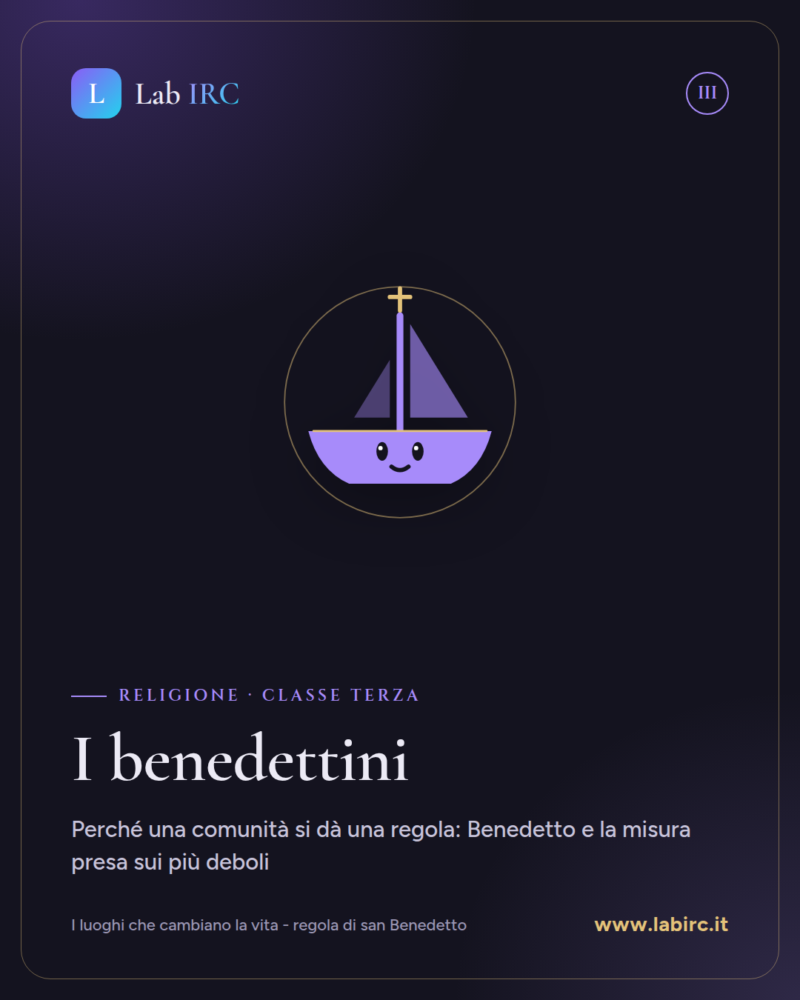
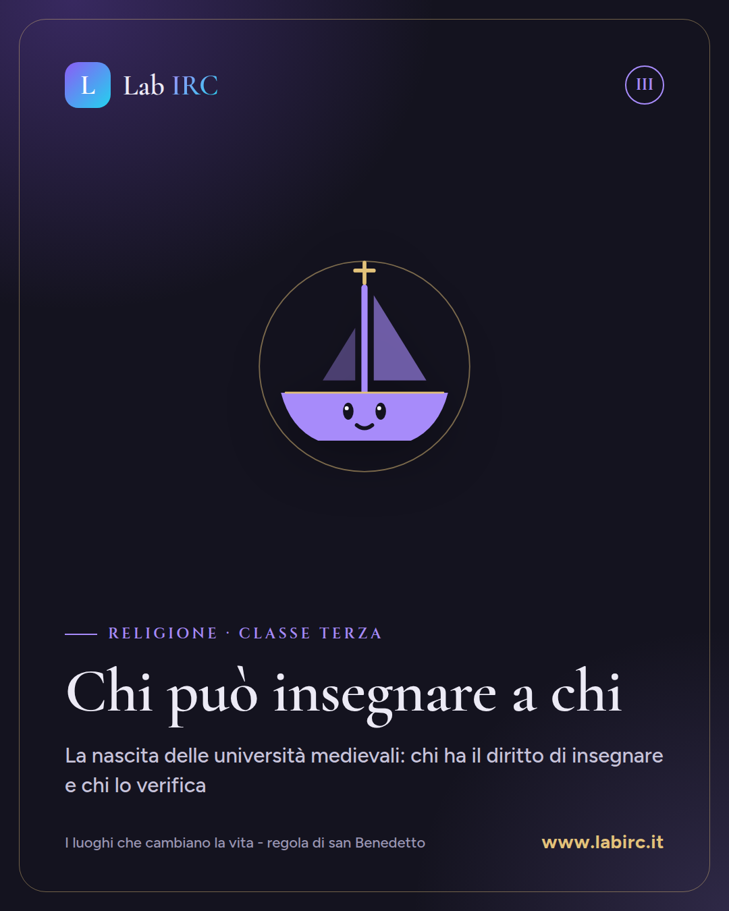

Come si usa. I post sono già in ordine: si alternano le cinque classi. Un buon ritmo è
due post a settimana, per esempio il lunedì e il giovedì.
Telegram, Pagina Facebook e Instagram escono da soli, un post il lunedì e uno il giovedì
(Facebook e Instagram solo quando la chiave di Meta è salvata su GitHub). WhatsApp: copia e incolla
nei gruppi di colleghi, senza mandare lo stesso messaggio a troppi gruppi lo stesso giorno.
Ogni lezione nuova che carichi riceve da sola i suoi post e la sua cartolina.
Da dove si comincia, in prima, a parlare di sacro e di grandi domande? E come si arriva, in quinta, alle due vie di Lemaître? Il Lab IRC – Il laboratorio di Religione nasce da queste domande. È lo spazio in cui raccolgo i materiali che uso nelle mie ore di Religione Cattolica nella secondaria di secondo grado: slide, documenti, video e strumenti interattivi, organizzati per anno di corso. In prima le radici e la Bibbia, in seconda Gesù di Nazaret, in terza la Chiesa nella storia, in quarta l'etica, in quinta le sfide di oggi. Ogni unità offre lezioni interattive, fascicoli e giochi di verifica, consultabili online gratuitamente. Se insegnate Religione, prendete quello che vi serve e adattatelo alle vostre classi.
https://www.labirc.it/
Instagram
Galileo, Lemaître, san Benedetto: che cosa ci fanno in un'ora di Religione?
Li trovi nel Lab IRC, il laboratorio dove raccolgo i materiali che uso in classe: slide, documenti, video e strumenti interattivi.
Un percorso in cinque anni.
Prima: il sacro, le grandi domande, la Bibbia.
Seconda: Gesù di Nazaret nella storia e nella fede.
Terza: la Chiesa nella storia, scienza e fede.
Quarta: libertà, coscienza, relazioni, giustizia.
Quinta: bioetica, ecologia, dottrina sociale.
Ogni unità ha lezioni interattive, fascicoli e giochi di verifica. Tutto online, gratis.
Perché ogni domanda seria merita tempo, cura e bellezza. 📚
Trovi il link nella bio. 🔗
#religionecattolica #irc #materialididattici #docentidireligione #scuolasecondaria
WhatsApp
Ciao a tutti, ho messo online i materiali che uso in classe, dalla prima alla quinta: dal senso religioso a Galileo, fino a Lemaître. Si chiama Lab IRC. Ci sono lezioni interattive, fascicoli e giochi di verifica, divisi per anno e per unità, consultabili gratis. Se vi serve qualcosa prendete pure, e poi ditemi come va 🙂
https://www.labirc.it/
Telegram
Lab IRC – Il laboratorio di Religione 📖
Slide, documenti, video e strumenti interattivi per le cinque classi della secondaria di secondo grado, organizzati per anno di corso. Si parte in prima dal senso religioso e dalla Bibbia e si arriva in quinta a bioetica, ecologia e dottrina sociale. In mezzo, unità sui quattro Vangeli e la Pasqua, sulla regola di san Benedetto, su Galileo e l'autorità: ognuna con lezioni interattive, fascicoli e giochi di verifica, gratuiti online.
https://www.labirc.it/
Pubblicato in automatico: Telegram il 2026-10-19, Facebook il 2026-10-19, Instagram il 2026-10-19.
«Agnostico» vuol dire disinteressato? «Ateo» vuol dire senza valori? «Credente» vuol dire senza dubbi? Sono tre equivoci che si sentono spesso, e questa lezione per la classe prima li affronta uno per uno.
Credo, non credo, non so presenta le risposte possibili alla domanda «Dio esiste?»: teismo, ateismo, agnosticismo, indifferenza e ateismo pratico. Gli studenti imparano a distinguere fatto, interpretazione e giudizio, poi esaminano un argomento per ciascuna posizione. Con un dettaglio che sorprende: Tommaso d'Aquino apre il suo discorso su Dio dando la parola all'ateo. In chiusura, il rapporto tra fede e ragione nell'insegnamento della Chiesa.
In classe è una base per discutere senza caricature. Ci sono domande di verifica e una risposta da motivare in poche righe: non si valuta la posizione dello studente, ma la chiarezza del ragionamento.
https://www.labirc.it/lezioni/1/l-uomo-che-cerca-oltre-il-senso-religioso/credo-non-credo-non-so/
Instagram
Anche «boh» è una risposta alla domanda «Dio esiste?» 🤔
Le risposte possibili, però, non sono infinite e ognuna ha un nome: teismo, ateismo, agnosticismo. Poi c'è chi non risponde: l'indifferenza, e l'ateismo pratico di chi vive come se Dio non ci fosse.
In questa lezione per la classe prima si impara a descrivere ogni posizione come la descriverebbe chi la sostiene.
«Luca dice di essere ateo» è un fatto. «Gli atei non hanno una morale» è un giudizio, e infondato. Molti litigi sulla religione nascono dal saltare subito al giudizio.
Le persone si rispettano tutte. Le tesi si discutono, perché non possono essere vere tutte insieme.
📚 Lezione, testi e domande di verifica: trovi il link nella bio.
#religionecattolica #irc #esistenzadidio #fedeeragione #classeprima
WhatsApp
Ciao a tutti, ho preparato una lezione per le prime sulla domanda «Dio esiste?»: teismo, ateismo, agnosticismo, indifferenza. L'ho pensata per smontare equivoci tipo «ateo = senza valori» e per discutere senza caricature, con un argomento per ogni posizione (testi di Tommaso d'Aquino). Ci sono anche domande di verifica. È online, gratis, se vi serve.
https://www.labirc.it/lezioni/1/l-uomo-che-cerca-oltre-il-senso-religioso/credo-non-credo-non-so/
Telegram
📘 Credo, non credo, non so — classe prima
Una lezione sulle risposte alla domanda «Dio esiste?»: teismo, ateismo, agnosticismo, indifferenza e ateismo pratico. Gli studenti smontano tre equivoci frequenti, distinguono fatto, interpretazione e giudizio e prendono sul serio un argomento per ciascuna posizione, con testi di Tommaso d'Aquino. In chiusura, fede e ragione secondo la Chiesa e domande di verifica.
https://www.labirc.it/lezioni/1/l-uomo-che-cerca-oltre-il-senso-religioso/credo-non-credo-non-so/
Pubblicato in automatico: Telegram il 2026-10-19, Facebook il 2026-10-19, Instagram il 2026-10-19.

Post 3 di 53 · Classe terza
I benedettini
I luoghi che cambiano la vita - regola di san Benedetto
Mezzo litro circa di vino al giorno, «tenendo presente lo stato di salute dei più deboli». Così la Regola di Benedetto fissa la razione dei monaci. Non conta il massimo che i forti sopportano, ma chi fa più fatica.
«I benedettini» è una lezione per la classe terza. Parte da una norma che gli studenti conoscono bene: a scuola lo smartphone non si usa in orario scolastico. E chiede: a che cosa serve una regola? Poi si leggono brani della Regola e si distinguono tre parole che spesso si confondono: fine, regola, efficienza. Si vede come il testo tratta lavoro, malati e ospiti. Si vede anche quali limiti pone all'abate, che per le questioni importanti ascolta tutti, anche il più giovane. Chiude il confronto con Basilio e con la Regola del Maestro.
In classe può aprire una discussione sulle regole che viviamo ogni giorno, a partire da un testo di 1500 anni fa. 📖
https://www.labirc.it/lezioni/3/i-luoghi-che-cambiano-la-vita-regola-di-san-benedetto/i-benedettini/
Instagram
Qualcuno bussa alla porta del monastero. Accanto alla porta vive un anziano, pronto a rispondere con una parola di benvenuto. 🚪
Lo prevede la Regola di Benedetto, scritta nel VI secolo per una comunità di monaci.
Prima delle norme, la Regola dice lo scopo: una scuola di servizio divino, senza nulla di gravoso o insopportabile.
Poi le misure concrete. Vino e lavoro sono calcolati su chi fa più fatica. La cura dei malati viene prima di tutto. Gli ospiti si accolgono come Cristo in persona.
Anche l'abate sta sotto la Regola. Il suo nome vuol dire padre e, per le questioni importanti, ascolta tutti, anche il più giovane.
La lezione «I benedettini» è per la classe terza e parte da una domanda di oggi: a che cosa serve la regola sullo smartphone a scuola? 📖
La lezione è online e gratuita. Il link è nella bio.
#religionecattolica #irc #regoladisanbenedetto #benedettini #classeterza
WhatsApp
Ciao a tutti, ho preparato per la terza una lezione sulla Regola di san Benedetto. Si parte dalla norma sullo smartphone a scuola e ci si chiede a che cosa serve una regola. I ragazzi leggono i brani su vino, lavoro, malati e ospiti e scoprono che la misura è presa sui più deboli. Se vi serve, è online e gratuita. 📖
https://www.labirc.it/lezioni/3/i-luoghi-che-cambiano-la-vita-regola-di-san-benedetto/i-benedettini/
Telegram
📖 Classe terza · I benedettini
Da che cosa si riconosce una regola buona? La lezione lo chiede partendo dallo smartphone a scuola. La risposta arriva dalla Regola di Benedetto: prima il fine, poi le norme. Gli studenti distinguono fine, regola ed efficienza e vedono quali limiti la Regola pone all'autorità dell'abate. Poi confrontano Benedetto con Basilio e con la Regola del Maestro.
https://www.labirc.it/lezioni/3/i-luoghi-che-cambiano-la-vita-regola-di-san-benedetto/i-benedettini/
Pubblicato in automatico: Telegram il 2026-10-26, Facebook il 2026-10-26, Instagram il 2026-10-26.
Nel 1931 un prete belga scrive a «Nature» una lettera di 457 parole. Se si segue all'indietro l'espansione dell'universo, si può pensare a uno stato iniziale densissimo: l'«atomo primitivo». Dal dattiloscritto, però, cancella l'ultima frase, quella su Dio. Perché?
La lezione per la classe quinta presenta Georges Lemaître, sacerdote e fisico. Insegna a distinguere tre piani: il risultato scientifico, il dato biografico e l'interpretazione. Gli studenti leggono testi di Lemaître, Tommaso d'Aquino e del Catechismo. Esaminano il discorso di Pio XII del 1951 e riflettono su due errori opposti, il concordismo e il fideismo.
In classe si può partire da una domanda semplice: un modello dell'universo può dimostrare o smentire la creazione?
https://www.labirc.it/lezioni/5/le-due-vie-di-lemaitre/la-visione-cosmologica-di-lemaitre/
Instagram
«Ho troppo rispetto per Dio per poterne fare un'ipotesi scientifica».
Lo diceva Georges Lemaître, sacerdote e fisico, il primo a proporre che l'universo avesse un inizio.
Nel 1927 descrive un universo in espansione. Nel 1931 parla di un «atomo primitivo», l'antenato di quello che oggi chiamiamo Big Bang.
Eppure rifiuta di usare la sua teoria come prova di Dio. E nel 1951 resta contrariato quando un discorso di Pio XII sembra passare dal dato astronomico al Creatore.
Nella lezione per la quinta gli studenti imparano a distinguere il risultato scientifico, il dato biografico e l'interpretazione. E a riconoscere due errori opposti: il concordismo e il fideismo.
Distinguere non è separare. 🔭
Trovi la lezione completa al link in bio.
#religionecattolica #irc #scienzaefede #bigbang #classequinta
WhatsApp
Ciao, ho preparato una lezione per la quinta su un prete che per primo propose un inizio dell'universo: Georges Lemaître. Il filo è una sua frase: «Esistono due vie per arrivare alla verità. Ho deciso di seguirle entrambe». I ragazzi imparano a non confondere risultato scientifico, biografia e interpretazione. Se lavorate su scienza e fede, è online e gratuita.
https://www.labirc.it/lezioni/5/le-due-vie-di-lemaitre/la-visione-cosmologica-di-lemaitre/
Telegram
Un prete e il Big Bang: nuova lezione per la quinta
Nel 2025 il progetto DESI, che mappa milioni di galassie, trova indizi che potrebbero ritoccare il modello cosmologico; nel 2026 nuove analisi tornano in accordo con quel modello. Una fede può appoggiarsi a un modello che cambia? La lezione risponde con Georges Lemaître, prete e fisico, che propose l'«atomo primitivo» ma rifiutò di farne una prova di Dio, e mette a confronto due errori opposti: concordismo e fideismo.
https://www.labirc.it/lezioni/5/le-due-vie-di-lemaitre/la-visione-cosmologica-di-lemaitre/
Pubblicato in automatico: Telegram il 2026-10-29, Facebook il 2026-10-29, Instagram il 2026-10-29.
Una freccia all'ingresso di un edificio e un anello scambiato durante un matrimonio: entrambi rimandano a qualcosa, ma in modi diversi. Da questa differenza parte la lezione «Segni e simboli» per la classe prima.
Il fascicolo distingue il segnale dal simbolo. Presenta la tesi del filosofo Ernst Cassirer sull'essere umano come animale simbolico e spiega che cosa sono sacro e profano (e perché profano non vuol dire cattivo). Poi legge il racconto di Giacobbe a Betel (Genesi 28), tre luoghi di culto (l'altare, l'aron ha-qodesh, il mihrab) e i tempi sacri: Shabbat, domenica, anno liturgico.
In classe gli studenti rispondono a quattro domande di studio. Imparano a interpretare un luogo o un giorno a partire dal contesto e dalle fonti. Il fascicolo si usa anche da solo, senza le altre lezioni dell'unità.
https://www.labirc.it/lezioni/1/l-uomo-che-cerca-oltre-il-senso-religioso/segni-e-simboli/
Instagram
Una pietra usata come cuscino.
Un sogno, una promessa.
Al risveglio Giacobbe la alza in piedi, vi versa olio e chiama quel luogo Betel.
Come può una cosa dire più di ciò che è? Se lo chiede la nuova lezione per la classe prima, «Segni e simboli».
Si parte da una freccia e da un anello. 💍
Poi il filosofo Ernst Cassirer, che chiama l'essere umano animale simbolico.
E una precisazione: profano non vuol dire cattivo.
Gli spazi: l'altare, l'aron ha-qodesh, il mihrab.
I tempi: lo Shabbat, la domenica, l'anno liturgico.
Quattro domande di studio aiutano a leggere un luogo o un giorno partendo dal contesto e dalle fonti.
Trovi la lezione con il link nella bio. 📖
#religionecattolica #irc #segniesimboli #sacroeprofano #classeprima
WhatsApp
Ciao a tutti, ho preparato per la prima una lezione su segni e simboli. Parte da una freccia e da un anello, poi tocca Cassirer, sacro e profano, Giacobbe a Betel, altare, aron ha-qodesh e mihrab, Shabbat e domenica. Ci sono quattro domande di studio e le fonti in fondo. Si usa anche da sola, senza le altre lezioni. Se vi serve, la trovate qui sotto.
https://www.labirc.it/lezioni/1/l-uomo-che-cerca-oltre-il-senso-religioso/segni-e-simboli/
Telegram
Segni e simboli: nuova lezione per la classe prima 📘
Un oggetto, un luogo o un giorno possono dire più di ciò che sono? Il fascicolo introduce il linguaggio religioso partendo da questa domanda: segnale e simbolo, la tesi di Cassirer sull'animale simbolico, sacro e profano, Giacobbe a Betel. Poi tre luoghi di culto (altare, aron ha-qodesh, mihrab) e i tempi sacri: Shabbat, domenica, anno liturgico. Chiudono quattro domande di studio e le fonti essenziali.
https://www.labirc.it/lezioni/1/l-uomo-che-cerca-oltre-il-senso-religioso/segni-e-simboli/
Si può capire «Quello che è di Cesare rendetelo a Cesare» senza sapere dove, quando e fra chi Gesù lo disse?
È la domanda della nuova lezione per la classe seconda. Si parte dall'aquila d'oro che Erode fece mettere sopra la porta del Tempio, abbattuta da alcuni giovani che pagarono con la vita. Poi la terra di Gesù: il dominio di Roma, il regno di Erode diviso, la Galilea di Antipa e la Giudea di Pilato, le correnti del giudaismo.
In classe gli studenti leggono Lc 3,1-2 come una mappa del potere. Scoprono perché la domanda sul tributo (Mc 12) era una trappola. Riflettono sull'incarnazione: Gesù è ebreo, dentro il suo popolo e non contro di esso, come ricorda Nostra aetate 4. Chiudono quattro domande, l'ultima su una frase di oggi che cambia senso fuori contesto.
https://www.labirc.it/lezioni/2/gesu-quali-tracce/gesu-sotto-il-segno-dell-aquila/
Instagram
Un'aquila d'oro sopra la porta del Tempio. Alcuni giovani si calano dal tetto con le funi e la abbattono a colpi d'ascia. Lo pagheranno con la vita. 🦅
Da questo episodio, raccontato da Giuseppe Flavio, parte la nuova lezione per la classe seconda: Gesù sotto il segno dell'aquila.
Si scopre la terra di Gesù. Roma che comanda. Il regno di Erode diviso. La Galilea di Antipa e la Giudea di Pilato.
Poi un popolo dalle molte voci: farisei, sadducei, esseni, erodiani.
Così diventa chiaro perché la domanda sul tributo a Cesare era una trappola. E perché Gesù, nato sotto la Legge, va letto dentro il suo popolo, non contro di esso.
Fascicolo e domande sono consultabili gratis: trovi il link nella bio. 📖
#religionecattolica #irc #gesustorico #vangeli #classeseconda
WhatsApp
Ciao a tutti, ho preparato per la seconda una lezione sul mondo in cui è vissuto Gesù: Roma, Galilea e Giudea, farisei, sadducei, esseni ed erodiani. Arriva alla domanda sul tributo a Cesare (Mc 12) e a come leggere il rapporto tra Gesù e gli ebrei. In fondo ci sono quattro domande. Se può esservi utile, è consultabile gratis 🙂
https://www.labirc.it/lezioni/2/gesu-quali-tracce/gesu-sotto-il-segno-dell-aquila/
Telegram
Classe seconda · Gesù sotto il segno dell'aquila 🦅
Chi comandava in Galilea e chi in Giudea? La lezione ricostruisce dove, quando e fra chi è vissuto Gesù, leggendo Lc 3,1-2 nome per nome. Spiega perché la domanda sul tributo a Cesare era una trappola e perché l'incarnazione colloca Gesù dentro il suo popolo. Chiudono quattro domande di comprensione e riflessione.
https://www.labirc.it/lezioni/2/gesu-quali-tracce/gesu-sotto-il-segno-dell-aquila/
Pubblicato in automatico: Telegram il 2026-10-22, Facebook il 2026-10-22, Instagram il 2026-10-22.

Post 7 di 53 · Classe terza
Chi può insegnare a chi
I luoghi che cambiano la vita - regola di san Benedetto
Un maestro afferma che ogni testimonianza scritta merita fiducia. Uno studente obietta: anche una menzogna si può mettere per iscritto. La domanda rende inutile il maestro, o lo costringe a spiegare meglio?
Da qui parte «Chi può insegnare a chi?», la lezione per la classe terza sulla nascita delle università medievali. Il percorso va dal legame tra ricerca di Dio e studio delle Scritture alle scuole di monasteri e cattedrali. Poi le città in crescita, Bologna e Parigi, il metodo del leggere, domandare e discutere, fino agli statuti parigini del 1215.
In classe gli studenti leggono il testo, imparano a distinguere autorità e autorevolezza e rispondono a quattro domande di studio con fonti e argomenti. Una, per esempio, mette a confronto un esperto che sostiene una tesi senza fonti e uno studente con un'obiezione documentata. 📚
https://www.labirc.it/lezioni/3/i-luoghi-che-cambiano-la-vita-regola-di-san-benedetto/chi-puo-insegnare-a-chi/
Instagram
Un maestro può conoscere molti libri e spiegare male.
Uno studente può porre una domanda che il maestro non si era posto.
Chi ha dunque il diritto di insegnare? 🎓
La nuova lezione per la classe terza racconta la nascita delle università medievali. Si parte dalla ricerca di Dio, che chiedeva di studiare le Scritture, e si arriva alle città che avevano bisogno di competenze.
A Bologna gli studenti si associano e organizzano lo studio. A Parigi gli statuti del 1215 chiedono età, anni di studio ed esame per insegnare.
E poi il metodo: leggere un testo, trovare una difficoltà, discuterla con argomenti e obiezioni.
Al centro, una distinzione utile ancora oggi: autorità e autorevolezza non sono la stessa cosa. 📖
La lezione è gratuita, con domande di studio per la classe. Trovi il link nella bio.
#religionecattolica #irc #universitamedievali #classeterza
WhatsApp
Ciao a tutti, per la terza ho preparato una lezione sulla nascita delle università medievali, costruita su una domanda: chi può insegnare a chi? Si passa da Bologna e Parigi, dal metodo scolastico e dagli statuti del 1215, fino alla differenza tra autorità e autorevolezza. Ci sono quattro domande di studio; se vi serve, è gratuita sul Lab IRC.
https://www.labirc.it/lezioni/3/i-luoghi-che-cambiano-la-vita-regola-di-san-benedetto/chi-puo-insegnare-a-chi/
Telegram
🎓 Chi può insegnare a chi? Nuova lezione per la classe terza
Le università del Medioevo nascono da più fili. La ricerca di Dio chiede di studiare i testi, le città cercano competenze, a Bologna gli studenti si associano, a Parigi si organizza la comunità dei maestri. La lezione presenta il metodo scolastico, fatto di lettura, questioni e discussione regolata, e gli statuti del 1215. Gli studenti distinguono autorità e autorevolezza e rispondono a quattro domande di studio con fonti e argomenti.
https://www.labirc.it/lezioni/3/i-luoghi-che-cambiano-la-vita-regola-di-san-benedetto/chi-puo-insegnare-a-chi/
«La Chiesa vendeva il perdono.» La frase l'abbiamo sentita tutti, e di solito passa senza che nessuno la controlli. La prima lezione dell'unità «Riformare una Chiesa, cambiare una cultura», per la classe quarta, parte da qui. Tiene separati tre piani: la dottrina cattolica sulle indulgenze, il modo in cui veniva amministrata, le distorsioni nella pratica.
In classe gli studenti ricostruiscono il contesto della predicazione di Tetzel: un cantiere, una carriera ecclesiastica, un debito con i banchieri. Lavorano su fonti brevi: la definizione di Paolo VI, la voce Treccani, alcune tesi di Lutero. Poi seguono la risposta di Roma, da Leone X al Concilio di Trento.
Alla fine resta una domanda che vale anche oltre il 1517: quando una protesta ha buone ragioni?
La lezione è consultabile online, gratuitamente.
https://www.labirc.it/lezioni/4/riformare-una-chiesa-cambiare-una-cultura/riformare-una-chiesa-le-indulgenze/
Instagram
«Appena la moneta tintinna nella cassa, l'anima vola via dal purgatorio.»
Un distico celebre, attribuito a Tetzel. Ma in nessun suo scritto si trova.
Che cosa insegnava davvero la Chiesa? E che cosa accadeva nella pratica?
Nella prima lezione dell'unità sulla Riforma, per la quarta, teniamo separati tre piani: la dottrina, il modo in cui veniva amministrata, le distorsioni.
C'è un predicatore, Tetzel.
C'è un cantiere, la nuova basilica di San Pietro.
C'è un debito con i banchieri Fugger. 📜
E c'è un frate agostiniano, Lutero. Il suo primo gesto documentato non è un martello su una porta, ma una lettera.
La domanda che accompagna tutta la lezione: quando una protesta ha buone ragioni?
Trovi la lezione nel link in bio.
#religionecattolica #irc #indulgenze #lutero #classequarta
WhatsApp
Ciao a tutti, ho preparato una lezione per la quarta sulle indulgenze del 1517. Parte dalla frase «la Chiesa vendeva il perdono» e aiuta i ragazzi a distinguere dottrina, procedura e distorsioni. Dentro ci sono Tetzel e il debito con i Fugger, Paolo VI, la Treccani e alcune tesi di Lutero. Se vi serve, è online e gratuita.
https://www.labirc.it/lezioni/4/riformare-una-chiesa-cambiare-una-cultura/riformare-una-chiesa-le-indulgenze/
Telegram
Il primo gesto di Lutero? Una lettera, non un martello
Il 31 ottobre 1517 Lutero scrive ad Alberto di Brandeburgo: chiede di ritirare l'istruzione ai predicatori delle indulgenze e allega le sue tesi. La nuova lezione per la quarta parte dal debito con i Fugger che stava dietro quella predicazione e distingue dottrina, procedura e distorsioni. Si chiude con la risposta di Roma, fino al Concilio di Trento, e con una domanda: quando una protesta ha buone ragioni?
https://www.labirc.it/lezioni/4/riformare-una-chiesa-cambiare-una-cultura/riformare-una-chiesa-le-indulgenze/
La luce nell'aria c'è adesso perché il sole c'è adesso, non perché l'ha accesa stamattina e poi se n'è andato. È l'immagine che regge «Creazione e primo istante», lezione per la classe quinta nell'unità dedicata a Georges Lemaître, prete e fisico. Si legge Genesi 1 come racconto della tradizione sacerdotale e ci si ferma sul verbo bārā'. Poi c'è la madre dei Maccabei, che ricorda al figlio che Dio ha fatto tutto «non da cose preesistenti» (2Mac 7,28). Infine la professione di fede del Lateranense IV (1215) e la risposta di Tommaso d'Aquino a Parigi. Il punto d'arrivo: creare non significa soltanto far cominciare, ma far esistere in ogni istante. In classe aiuta a tenere distinte le domande della fisica e quelle della fede, senza contrapporle.
https://www.labirc.it/lezioni/5/le-due-vie-di-lemaitre/creazione-e-primo-istante/
Instagram
Per molti «creare» vuol dire «far cominciare»: Dio all'inizio, poi il mondo va avanti da sé.
La lezione «Creazione e primo istante», per la classe quinta, mostra che questa idea non basta.
Si parte da Genesi 1: un racconto solenne, scandito come una settimana, in cui il sole e la luna non hanno nemmeno un nome.
Poi il verbo bārā', che nella Bibbia ha sempre Dio come soggetto. La madre dei Maccabei e il suo «non da cose preesistenti». Il concilio del 1215. Tommaso d'Aquino a Parigi.
Un'immagine accompagna il percorso: la luce nell'aria c'è perché il sole c'è adesso. ☀️
Creare è far esistere, in ogni istante.
Il fascicolo è nel Lab IRC: trovi il link nella bio. 📖
#religionecattolica #irc #creazione #scienzaefede #classequinta
WhatsApp
Ciao a tutti, ho preparato per le quinte una lezione su creazione e primo istante, nell'unità su Lemaître. Lavoriamo su Genesi 1 e sul verbo bārā', su 2Mac 7,28, sul Lateranense IV e su Tommaso a Parigi. La domanda di fondo: creare vuol dire solo far cominciare? È online e gratuita, se vi serve.
https://www.labirc.it/lezioni/5/le-due-vie-di-lemaitre/creazione-e-primo-istante/
Telegram
Se la creazione non è il Big Bang, che cosa resta di questa parola? 📘
La lezione per la quinta «Creazione e primo istante» segue la domanda da Genesi 1 e dal verbo bārā' fino alla madre dei Maccabei (2Mac 7,28). Poi passa alla professione di fede del Lateranense IV, nel 1215, e a Tommaso d'Aquino a Parigi. La risposta: creare non è solo far cominciare, è far essere, adesso.
https://www.labirc.it/lezioni/5/le-due-vie-di-lemaitre/creazione-e-primo-istante/
Se una didascalia chiamasse il Muro occidentale «una chiesa ebraica», i vostri studenti saprebbero dire che cosa correggere e perché?
La lezione «Gerusalemme, una città di memorie», per la classe prima, aiuta gli studenti a riconoscere il Muro occidentale, il Santo Sepolcro e la Cupola della Roccia. Ne distinguono il significato e li collocano in uno schema della Città Vecchia. Trovano spazio il Salmo 122, la differenza tra ciò che studia l'archeologia e ciò che afferma la fede sulla risurrezione, la precisione dei nomi: Cupola della Roccia e moschea al-Aqsa non sono lo stesso edificio.
Nell'ultima parte, a partire da un episodio dei Simpson ambientato in Terra Santa, si impara a controllare i fatti su fonti adatte. Chiudono quattro domande di studio.
https://www.labirc.it/lezioni/1/israele-una-promessa-una-storia-fino-a-oggi/gerusalemme-una-citta-di-memorie/
Instagram
Una pietra, una tomba, una roccia. 🕊️
A Gerusalemme, nella Città Vecchia, il Muro occidentale, il Santo Sepolcro e la Cupola della Roccia sono a pochi passi. Ma ogni comunità li guarda in modo diverso.
Per l'ebraismo, il Muro richiama il Tempio distrutto nel 70 d.C.
Per i cristiani, il Sepolcro custodisce la memoria della morte e risurrezione di Gesù.
Per l'islam, la Cupola racchiude la roccia legata all'ascesa di Muhammad al cielo.
Una lezione per la classe prima: riconoscere i luoghi, chiamarli con il nome giusto, capire le fedi senza confonderle.
E una domanda in più: che cosa resta vero quando un luogo santo finisce in una parodia? 📖
Il link alla lezione è nella bio.
#religionecattolica #irc #gerusalemme #classeprima #luoghisanti
WhatsApp
Ciao a tutti, ho preparato una lezione per le prime su Gerusalemme come città di memorie: Muro occidentale, Santo Sepolcro e Cupola della Roccia, con uno schema della Città Vecchia da completare. C'è anche una parte sul controllo dei fatti a partire da un episodio dei Simpson, e quattro domande di studio. Se vi serve, è online e gratuita 🙂
https://www.labirc.it/lezioni/1/israele-una-promessa-una-storia-fino-a-oggi/gerusalemme-una-citta-di-memorie/
Telegram
Gerusalemme, una città di memorie – classe prima 🕊️
La lezione presenta tre luoghi della Città Vecchia: il Muro occidentale, legato al Tempio; il Santo Sepolcro, memoria della Pasqua; la Cupola della Roccia, legata dalla tradizione islamica all'ascesa di Muhammad al cielo. Gli studenti li collocano in uno schema e ne distinguono il significato. Nella parte finale imparano a verificare i fatti con fonti adatte, partendo da una parodia televisiva, e rispondono a quattro domande di studio.
https://www.labirc.it/lezioni/1/israele-una-promessa-una-storia-fino-a-oggi/gerusalemme-una-citta-di-memorie/
Una frase antica compare sullo schermo: un autore romano parla di Cristo. Basta leggerla per sapere che cosa è accaduto?
«Lo screenshot non basta» è la seconda lezione dell'unità «Gesù: quali tracce?», per la classe seconda. Prima si impara a leggere una fonte. Si distingue la data dell'evento dalla data del testo, si riconosce il genere e si separa la notizia dal giudizio di chi scrive. Poi si leggono brevi passi di Tacito (Annali XV,44), di Plinio il Giovane e della risposta di Traiano (Lettere X,96-97), in traduzione originale.
In classe gli studenti rispondono a quattro domande di studio e correggono un post con due affermazioni sbagliate. Alla fine formulano una conclusione che non chiede ai documenti più di quanto dicono. L'ultima parte collega il lavoro al rapporto tra fede e storia nella Dei Verbum. 📜
https://www.labirc.it/lezioni/2/gesu-quali-tracce/lo-screenshot-non-basta/
Instagram
Cantavano a voci alterne un inno a Cristo come a un dio. Lo scrive Plinio il Giovane, governatore romano, intorno al 112.
Ma la lettera attesta un culto. Non dimostra che Cristo sia Dio.
Tacito, decenni dopo i fatti, ricorda che Cristo fu messo a morte sotto Tiberio, per opera di Ponzio Pilato. Non era un testimone oculare.
Traiano risponde a Plinio: i cristiani non vanno cercati d'ufficio. Ma se denunciati e accertati, vanno puniti. Non è libertà religiosa.
Prima di usare una frase antica bisogna sapere chi scrive, quando e perché. Lo screenshot non basta. 📜
Una lezione per la classe seconda su fonti, metodo e rapporto tra fede e storia.
Il link è nella bio.
#religionecattolica #irc #fontistoriche #gesustorico #classeseconda
WhatsApp
Ciao a tutti, ho preparato per la seconda una lezione sulle fonti romane: Tacito, Plinio e la risposta di Traiano. Gli studenti imparano a non fermarsi alla frase ritagliata, rispondono a quattro domande e correggono insieme un post impreciso su Gesù. Se vi può servire, ve la lascio qui sotto.
https://www.labirc.it/lezioni/2/gesu-quali-tracce/lo-screenshot-non-basta/
Telegram
Lo screenshot non basta: Tacito e Plinio sulle tracce di Gesù
Che cosa sappiamo di Gesù e dei primi cristiani da chi non condivideva la loro fede? È la domanda della nuova lezione per la classe seconda, nell'unità «Gesù: quali tracce?». Prima un metodo per leggere le fonti, poi i passi di Tacito (Annali XV,44), di Plinio e di Traiano (Lettere X,96-97). In chiusura, il legame tra fede e storia nella Dei Verbum, n. 19.
https://www.labirc.it/lezioni/2/gesu-quali-tracce/lo-screenshot-non-basta/
Post 12 di 53 · Classe terza
Chi cura chi non può ricambiare
I luoghi che cambiano la vita - regola di san Benedetto
Una miniatura del Trecento mostra uomini con il mantello nero e la croce a doppio braccio: trasportano un malato su una lettiga a ruote. Sono i fratelli di Santo Spirito in Sassia, e la loro regola li manda a cercare i poveri per le strade.
La nuova lezione per la classe terza racconta come è nata quella casa, da fratel Guido a Montpellier fino a Innocenzo III a Roma. E si chiede perché aiutare chi non può ricambiare.
In classe gli studenti leggono le fonti e due brani del Vangelo (Mt 25 e Lc 14), riassumono i capitoli della regola e chiariscono tre parole: ospedale, gratuità, carità. Poi scoprono chi pagava i costi. Resta una buona domanda di metodo: la regola dice che cosa si doveva fare, ma non prova come fosse davvero la cura.
https://www.labirc.it/lezioni/3/i-luoghi-che-cambiano-la-vita-regola-di-san-benedetto/chi-cura-chi-non-puo-ricambiare/
Instagram
Un neonato abbandonato. Un malato grave. Un povero senza nulla.
Se l'aiuto fosse riservato a chi può restituire, resterebbero fuori proprio loro.
A Roma, fra il 1198 e il 1201, Innocenzo III fonda l'ospedale di Santo Spirito in Sassia e lo affida a fratel Guido, un laico che a Montpellier serviva già i poveri.
La regola della casa manda i fratelli a cercare i malati per le strade, chiede di nutrire gli orfani abbandonati e di accogliere le donne incinte povere.
Il criterio viene dal Vangelo: «invita poveri, storpi, zoppi, ciechi… perché non hanno da ricambiarti» (Lc 14).
Ma la gratuità non elimina i costi: elemosine, rendite e lasciti sostenevano l'accoglienza.
Lezione per la classe terza, con fonti, brani biblici e parole chiave.
La trovi con il link in bio.
#religionecattolica #irc #operedimisericordia #santospiritoinsassia #classeterza
WhatsApp
Ciao a tutti, ho preparato una lezione per la terza sull'ospedale di Santo Spirito in Sassia, nato a Roma fra il 1198 e il 1201. Gli studenti leggono le fonti, Mt 25 e Lc 14, chiariscono ospedale, gratuità e carità e si chiedono chi pagava l'accoglienza. È online e gratuita: se vi serve, la trovate qui sotto.
https://www.labirc.it/lezioni/3/i-luoghi-che-cambiano-la-vita-regola-di-san-benedetto/chi-cura-chi-non-puo-ricambiare/
Telegram
Nuova lezione per la classe terza: Santo Spirito in Sassia
Roma, intorno al 1200: un papa e un laico venuto da Montpellier danno vita a una casa per chi non può restituire nulla. Gli studenti seguono la storia attraverso le bolle di Innocenzo III, la regola dell'ordine e i brani di Mt 25 e Lc 14. Chiariscono le parole ospedale, gratuità e carità, scoprono chi pagava l'accoglienza e riflettono su che cosa le fonti possono provare e che cosa no.
https://www.labirc.it/lezioni/3/i-luoghi-che-cambiano-la-vita-regola-di-san-benedetto/chi-cura-chi-non-puo-ricambiare/
Aprile 1521: a Worms un professore di teologia si sente chiedere, davanti all'imperatore, se è disposto a ritirare i propri libri. Che cosa succede quando la coscienza di una persona e l'autorità della Chiesa arrivano a conclusioni diverse?
La lezione «Lutero a Worms», per la classe quarta, ricostruisce il percorso dalle novantacinque tesi sulle indulgenze alla bolla Exsurge Domine, dalla scomunica all'editto imperiale. Mette a confronto il criterio di Lutero, fondato sulla Scrittura, con quello di Carlo V e della Chiesa. Distingue i fatti dalla memoria successiva, come il celebre «Qui sto», e chiarisce che cosa intende per coscienza l'insegnamento cattolico.
In classe gli studenti confrontano i due criteri e ragionano sul dissenso con un esempio immaginario: uno studente e un'accusa da firmare.
https://www.labirc.it/lezioni/4/riformare-una-chiesa-cambiare-una-cultura/lutero-a-worms/
Instagram
18 aprile 1521, Worms. Davanti all'imperatore Carlo V, Martin Lutero rifiuta di ritrattare. 📜
«La mia coscienza è prigioniera della parola di Dio».
Ma chi giudica la coscienza?
La nuova lezione per la classe quarta segue il cammino dalle indulgenze alla scomunica, fino al bando dell'Impero.
Mette a confronto due criteri: la Scrittura per Lutero, la fede trasmessa e l'autorità della Chiesa per Carlo V.
Spiega perché il famoso «Qui sto, non posso fare altrimenti» va trattato con cautela: una frase può diventare simbolo di un evento senza esserne il verbale.
E chiarisce che cos'è la coscienza secondo l'insegnamento cattolico: un giudizio da seguire e, insieme, da educare. 🕊️
Lezione e fascicolo sono consultabili gratuitamente: trovi il link nella bio.
#religionecattolica #irc #lutero #riformaprotestante #classequarta
WhatsApp
Come si fa capire in quarta il rifiuto di Lutero davanti a Carlo V? Ho preparato una lezione su Worms 1521: dalle indulgenze alla scomunica, poi i due criteri a confronto, Scrittura e autorità della Chiesa. C'è anche il «Qui sto», che forse non fu pronunciato così, e un caso immaginario sulla coscienza per far discutere. È online e gratuita, se vi serve.
https://www.labirc.it/lezioni/4/riformare-una-chiesa-cambiare-una-cultura/lutero-a-worms/
Telegram
📜 Lutero a Worms: chi giudica la coscienza? Nuova lezione per la quarta
Il 18 aprile 1521 Lutero rifiuta di ritirare i suoi scritti: potrebbe convincerlo solo la Scrittura o una ragione evidente. Il giorno dopo Carlo V risponde richiamando la fede trasmessa per secoli. La lezione segue il caso dalle indulgenze all'editto di Worms e chiude sulla coscienza: un giudizio che può sbagliare e che va formato.
https://www.labirc.it/lezioni/4/riformare-una-chiesa-cambiare-una-cultura/lutero-a-worms/
«Più adatto a che cosa?» Basta questa domanda per accorgersi di quanto sia facile far scivolare una parola della biologia in un giudizio di superiorità. La nuova lezione per la classe quinta parte da qui: l'evoluzione spiega le nostre origini, ma stabilisce anche quanto vale una persona?
Gli studenti esaminano le prove dell'evoluzione e chiariscono che cosa significano selezione naturale e fitness. Poi leggono passi di Humani generis, di Giovanni Paolo II (1996), del Catechismo e di Dignitas infinita su creazione, immagine di Dio, anima e corpo, dignità.
In classe aiutano due esempi immaginari. Il primo è una popolazione di piante in un ambiente che diventa più secco. Il secondo è un titolo secondo cui aiutare chi dipende dagli altri sarebbe sbagliato. Si possono analizzare insieme, con credenti e non credenti.
https://www.labirc.it/lezioni/5/le-due-vie-di-lemaitre/levoluzione-decide-quanto-valiamo/
Instagram
Quella fila di figure, dalla scimmia all'uomo moderno, suggerisce una scala.
La storia della vita è invece ramificata: linee che si dividono, e molte che si estinguono. 🌿
Fossili, anatomia e genetica mostrano che anche noi facciamo parte di questa storia. Ma questo stabilisce quanto vale una persona?
La lezione per la classe quinta tiene distinte le due domande.
Fitness non vuol dire forza né valore morale: indica il successo riproduttivo relativo in un dato ambiente. E descrivere un processo non basta a farne una regola di comportamento.
Poi i testi della Chiesa: Humani generis, Giovanni Paolo II nel 1996, il Catechismo, Dignitas infinita. Creazione, immagine di Dio, anima e corpo come un unico essere umano.
La dignità non cresce quando si supera una prova. Non cala quando si diventa dipendenti.
Trovi la lezione con il link nella bio.
#religionecattolica #irc #evoluzione #dignitaumana #classequinta
WhatsApp
Ciao a tutti, per le quinte ho preparato una lezione su evoluzione e dignità. La domanda di partenza è se la biologia possa stabilire quanto vale una persona. Ci sono le prove dell'evoluzione, che cosa vuol dire davvero fitness, un titolo immaginario da analizzare e passi dei documenti della Chiesa, da Humani generis a Dignitas infinita. Se vi serve, il link è qui sotto.
https://www.labirc.it/lezioni/5/le-due-vie-di-lemaitre/levoluzione-decide-quanto-valiamo/
Telegram
L'evoluzione decide quanto valiamo? Nuova lezione per la quinta
Fossili, anatomia e genetica raccontano una storia ramificata di cui fa parte anche Homo sapiens. La lezione spiega selezione naturale e fitness e mostra perché da una descrizione biologica non nasce una graduatoria di valore. Con i testi della Chiesa, da Humani generis a Dignitas infinita, si arriva a una dignità che non dipende dalle prestazioni.
https://www.labirc.it/lezioni/5/le-due-vie-di-lemaitre/levoluzione-decide-quanto-valiamo/
Il cielo, il mare, la tempesta, il sole: per i popoli antichi ognuno aveva un dio, con un nome e un tempio. La Bibbia comincia la storia di Israele in un altro modo, con una voce che chiama un uomo per nome: «Vattene dalla tua terra».
La lezione «Molti dèi o un Dio che chiama», per la classe prima, mette a confronto gli dèi di Esiodo e della città cananea di Ugarit con il Dio di Genesi 12 e le sue tre promesse: una terra, una discendenza, una benedizione. Segue Abramo che si fida, chiede un segno, ride davanti all'impossibile, e mostra perché fidarsi non è credere a tutto. Poi l'alleanza e la nascita del monoteismo di Israele.
In classe si leggono i testi biblici e si chiude con domande per lo studio che chiedono risposte con esempi presi dal testo. Utile per parlare di fede e credulità con chi crede e con chi no.
https://www.labirc.it/lezioni/1/israele-una-promessa-una-storia-fino-a-oggi/molti-dei-o-un-dio-che-chiama/
Instagram
Per i popoli antichi gli dèi erano molti: Baal con i simboli del tuono e del fulmine, Zeus che mette ordine fra tutti.
Poi, in Genesi 12, una voce chiama un uomo per nome: «Vattene dalla tua terra».
Nella lezione per la classe prima mettiamo a confronto due modi di pensare il divino: le forze del mondo con un volto e un Dio che parla, promette e si lega con un'alleanza.
Abramo lascia la terra, la parentela, la casa del padre. La meta non ha nome.
E una domanda che parla anche a noi: fidarsi vuol dire credere a tutto? Abramo parte senza prove, poi chiede un segno. Fiducia e prudenza stanno insieme. 📖
Testi biblici, parole chiave e domande per lo studio. Trovi il link nella bio.
#religionecattolica #irc #abramo #monoteismo #classeprima
WhatsApp
Ciao a tutti, per la prima ho preparato una lezione su Abramo. Parte dagli dèi antichi, come Baal dio della tempesta, e arriva al Dio di Genesi 12 che chiama per nome e promette. Dentro ci sono fede e credulità, l'alleanza, la nascita del monoteismo e domande per lo studio. È online e gratuita: il link è qui sotto.
https://www.labirc.it/lezioni/1/israele-una-promessa-una-storia-fino-a-oggi/molti-dei-o-un-dio-che-chiama/
Telegram
Nuova lezione per la classe prima: Molti dèi o un Dio che chiama
Dagli dèi di Esiodo e di Ugarit, forze del mondo con un volto, al Dio che in Genesi 12 chiama Abramo e gli fa tre promesse. La lezione distingue la fede dalla credulità attraverso le domande di Abramo e il riso di Sara. Poi segue l'alleanza fino all'esilio, quando Israele dirà che c'è un solo Dio. Si chiude con domande per lo studio.
https://www.labirc.it/lezioni/1/israele-una-promessa-una-storia-fino-a-oggi/molti-dei-o-un-dio-che-chiama/
Perché uno storico ebreo, che non era cristiano, avrebbe scritto di Gesù «Egli era il Cristo»? È una delle domande al centro del Testimonium Flavianum, il passo su Gesù nelle Antichità giudaiche di Giuseppe Flavio.
La terza lezione dell'unità «Gesù: quali tracce?», per la classe seconda, segue il cammino di questo testo, di copia in copia, fino a noi. Gli studenti distinguono la data dell'opera, quella della citazione di Eusebio e quella del manoscritto più antico. Scoprono che cosa sono l'interpolazione e la critica testuale e confrontano le tre ipotesi degli studiosi. Chiude un chiarimento sul rapporto tra studio storico dei testi e fede, con Dei Verbum 12.
In classe la si può leggere insieme e poi lavorare sulle quattro domande finali: aiutano a separare ciò che il testo dice da ciò che si ipotizza.
https://www.labirc.it/lezioni/2/gesu-quali-tracce/anche-i-testi-hanno-una-storia/
Instagram
XI secolo: è la data del più antico manoscritto greco con il passo di Giuseppe Flavio su Gesù. Eppure Eusebio lo cita già nel IV secolo. 📜
Giuseppe Flavio era uno storico ebreo del I secolo. L'originale delle sue Antichità giudaiche non lo possediamo: abbiamo copie, traduzioni e citazioni.
Nel passo su Gesù alcune espressioni sembrano scritte dall'interno della fede cristiana. Aggiunte dei copisti su un nucleo autentico? Un passo inserito per intero? O parole di Giuseppe, da capire meglio? Gli studiosi ne discutono ancora.
Una lezione per la classe seconda su interpolazione, critica testuale e su come un dubbio ben delimitato aiuti a sapere meglio.
La trovi gratis sul Lab IRC: il link è nella bio.
#religionecattolica #irc #giuseppeflavio #gesustorico #classeseconda
WhatsApp
Ciao a tutti, ho preparato per la seconda una lezione su Giuseppe Flavio e il Testimonium Flavianum: date dell'opera, delle citazioni e dei manoscritti, interpolazione, critica testuale e le tre ipotesi degli studiosi. Ci sono quattro domande di verifica e un passaggio su Dei Verbum 12. Se vi è utile, è consultabile gratis sul Lab IRC.
https://www.labirc.it/lezioni/2/gesu-quali-tracce/anche-i-testi-hanno-una-storia/
Telegram
📚 Anche i testi hanno una storia – classe seconda
Nuova lezione dell'unità «Gesù: quali tracce?», dedicata al Testimonium Flavianum di Giuseppe Flavio. Tre date da non confondere: l'opera (93-94 d.C.), la citazione di Eusebio (IV secolo), il manoscritto greco più antico (XI secolo). Poi interpolazione, critica testuale, tre ipotesi a confronto e un chiarimento, con Dei Verbum 12, sul rapporto tra studio dei testi e fede.
https://www.labirc.it/lezioni/2/gesu-quali-tracce/anche-i-testi-hanno-una-storia/
Post 17 di 53 · Classe terza
1300, perché tutti in cammino
I luoghi che cambiano la vita - regola di san Benedetto
Duecentomila pellegrini a Roma, in ogni momento dell'anno. Lo scrive il mercante fiorentino Giovanni Villani, che nel 1300 era lì: «vi fui presente e vidi». Perché tutti in cammino?
La lezione per la classe terza segue chi partiva. Comincia dalla caduta di Acri nel 1291, che chiude la strada per Gerusalemme, e arriva alla bolla Antiquorum habet di Bonifacio VIII. Spiega che cos'è l'indulgenza, distinguendo colpa e pena. Affronta con onestà anche il tema del denaro e degli abusi, che la Chiesa stessa ha riconosciuto. Poi il cammino: la bisaccia e il bordone, la via Francigena, gli ospizi lungo le strade.
In classe si lavora sulle fonti: Villani, il cardinale Stefaneschi, la bolla, Dante. Una base per parlare del giubileo partendo dalla storia.
https://www.labirc.it/lezioni/3/i-luoghi-che-cambiano-la-vita-regola-di-san-benedetto/1300-perche-tutti-in-cammino/
Instagram
1° gennaio 1300, notte. La folla riempie San Pietro e chiede il perdono. Il papa non c'è. 🕯️
Perché tutta quella gente in cammino?
La Terra Santa è perduta: dal 1291 la strada per Gerusalemme è chiusa. A Roma corre una voce sul «centesimo anno».
Bonifacio VIII fa cercare negli archivi. Non trova un fondamento. Il 22 febbraio firma la bolla Antiquorum habet.
Che cosa cercavano i pellegrini? Il perdono pieno. La lezione spiega l'indulgenza con parole semplici: la differenza tra colpa e pena.
Poi la strada: la bisaccia e il bordone, la via Francigena, gli ospizi dove nel pellegrino si accoglieva Cristo. 🚶
Una lezione per la classe terza, costruita sulle fonti.
La trovi sul Lab IRC: il link è nella bio.
#religionecattolica #irc #giubileo #pellegrinaggio #classeterza
WhatsApp
Ciao a tutti, per la terza ho preparato una lezione sul giubileo del 1300: la testimonianza di Villani, la bolla di Bonifacio VIII, che cosa significa indulgenza distinguendo colpa e pena, e il cammino dei pellegrini sulla via Francigena. Lavora molto sulle fonti. Se vi può servire, è consultabile gratis sul Lab IRC, il link è qui sotto.
https://www.labirc.it/lezioni/3/i-luoghi-che-cambiano-la-vita-regola-di-san-benedetto/1300-perche-tutti-in-cammino/
Telegram
Nuova lezione per la terza: 1300, perché tutti in cammino
Nel 1291 cade Acri e la strada per Gerusalemme si chiude. Nove anni dopo, migliaia di pellegrini partono per Roma. La lezione li segue nel primo giubileo, dalla bolla di Bonifacio VIII al significato dell'indulgenza, con la distinzione tra colpa e pena. Poi accompagna il cammino, con bisaccia e bordone lungo la via Francigena, fino alla parola biblica da cui viene il nome «giubileo».
https://www.labirc.it/lezioni/3/i-luoghi-che-cambiano-la-vita-regola-di-san-benedetto/1300-perche-tutti-in-cammino/
«Cosa disonestissima in un luogo tanto onorato avervi fatto tanti ignudi». Così Biagio da Cesena, maestro delle cerimonie del papa, giudicava il Giudizio universale di Michelangelo. Nel 1565, su quella parete, furono dipinti i primi panneggi.
La terza lezione dell'unità «Riformare una Chiesa, cambiare una cultura», per la classe quarta, segue il Concilio di Trento: la riforma del clero, i seminari, la difesa cattolica delle immagini fino al decreto della sessione XXV. Poi il caso della Sistina diventa un esercizio di metodo: tenere distinte la norma generale (1563), la decisione sul dipinto (1564) e l'intervento di Daniele da Volterra (1565).
In classe gli studenti leggono Matteo 25,31-46, confrontano fonti e copie dell'affresco e valutano con cautela che cosa si può attribuire al testo conciliare e che cosa no.
https://www.labirc.it/lezioni/4/riformare-una-chiesa-cambiare-una-cultura/un-concilio-puo-cambiare-cio-che-vediamo/
Instagram
Un affresco resta sulla stessa parete. Ma cambia il modo in cui lo si guarda, e a volte cambia anche ciò che vi è dipinto.
Nuova lezione per la classe quarta: il Concilio di Trento, la riforma del clero, i seminari e la difesa cattolica delle immagini.
Poi il Giudizio universale di Michelangelo, con tre date da tenere separate:
1563, la norma generale
1564, la decisione sul dipinto
1565, l'intervento di Daniele da Volterra, detto il Braghettone
Si legge Matteo 25, si confrontano copie e fonti, si impara a distinguere ciò che un testo dice da ciò che accade davvero.
Il fascicolo è nel Lab IRC: trovi il link nella bio. 🎨
#religionecattolica #irc #concilioditrento #giudiziouniversale #classequarta
WhatsApp
Ciao a tutti, per la quarta ho preparato una lezione sul Concilio di Trento: seminari, difesa delle immagini, decreto della sessione XXV e il caso del Giudizio universale di Michelangelo, con le tre date da distinguere (1563, 1564, 1565) e il confronto fra fonti e copie. Se vi serve, il fascicolo è consultabile gratis sul Lab IRC.
https://www.labirc.it/lezioni/4/riformare-una-chiesa-cambiare-una-cultura/un-concilio-puo-cambiare-cio-che-vediamo/
Telegram
Un concilio può cambiare ciò che vediamo? · Classe quarta
Il fascicolo segue il Concilio di Trento dalla riforma del clero e dai seminari alla difesa cattolica delle immagini nel decreto della sessione XXV. Il Giudizio universale di Michelangelo diventa un caso di studio: norma generale, decisione sul dipinto e intervento pittorico vanno tenuti distinti. Gli studenti leggono Matteo 25 e confrontano con cautela fonti e copie dell'affresco.
https://www.labirc.it/lezioni/4/riformare-una-chiesa-cambiare-una-cultura/un-concilio-puo-cambiare-cio-che-vediamo/
Un uomo giusto perde in un giorno i beni e i dieci figli, poi la salute. Tre amici gli siedono accanto in silenzio per sette giorni. Poi parlano e, per difendere Dio, accusano lui. Quando Dio risponde «in mezzo all'uragano», non spiega nulla: fa domande.
La lezione per la classe quinta segue il libro di Giobbe dal prologo al capitolo 38. Tocca la dottrina della retribuzione e l'errore degli amici, letto con Kant e Ratzinger. Poi i quattro quadri delle domande divine (la terra, il mare, l'aurora, gli abissi) e l'inno alla sapienza del capitolo 28.
In classe aiuta a vedere il passaggio sbagliato da «soffre» a «è colpevole». Aiuta anche a separare due cose: conoscere il mondo, che l'uomo fa e deve fare, e possederne il disegno intero, che non può. Fa parte dell'unità su Lemaître e sul dialogo fra scienza e fede.
https://www.labirc.it/lezioni/5/le-due-vie-di-lemaitre/giobbe-dove-comincia-il-mio-limite/
Instagram
«Quando ponevo le fondamenta della terra, tu dov'eri?»
Per trenta capitoli Giobbe ha chiesto un processo. Dio risponde in mezzo all'uragano 🌊 e invece di spiegare interroga.
Gli amici avevano una risposta pronta: se soffri, hai peccato. Basta un innocente come Giobbe e quella risposta cade.
La lezione per la quinta legge il libro dal prologo al capitolo 38. Ci sono la retribuzione, Kant e Ratzinger, i quattro quadri della terra, del mare, dell'aurora e degli abissi. E l'inno alla sapienza del capitolo 28.
Il limite non è la ricerca. L'uomo scava fino alle rocce nel buio più fondo, e il libro lo ammira. Il limite è pretendere di possedere il disegno intero del mondo.
La lezione è gratuita: trovi il link nella bio.
#religionecattolica #irc #giobbe #scienzaefede #classequinta
WhatsApp
Ciao a tutti, ho preparato per la quinta una lezione sul libro di Giobbe, dentro l'unità su Lemaître e su scienza e fede. Si parte dal prologo e si arriva alla voce di Dio dall'uragano. In mezzo ci sono la retribuzione, l'errore degli amici, Kant e Ratzinger e l'inno alla sapienza del capitolo 28. Se vi serve, è online e gratuita.
https://www.labirc.it/lezioni/5/le-due-vie-di-lemaitre/giobbe-dove-comincia-il-mio-limite/
Telegram
Giobbe, dove comincia il mio limite 📖
Nuova lezione per la classe quinta, nell'unità su Lemaître e sul dialogo fra scienza e fede. Si legge il libro di Giobbe dal prologo alla voce di Dio in mezzo all'uragano, passando per la retribuzione e per gli amici che accusano un innocente pur di difendere Dio, con Kant e Ratzinger. I quattro quadri delle domande divine e l'inno alla sapienza del capitolo 28 mostrano che il confine non è la ricerca, ma la pretesa di avere il disegno intero e da lì giudicare.
https://www.labirc.it/lezioni/5/le-due-vie-di-lemaitre/giobbe-dove-comincia-il-mio-limite/
Una tunica con maniche lunghe, regalata dal padre a un solo figlio. Da lì nasce un'invidia che porta i fratelli a vendere Giuseppe. Il male subito ha l'ultima parola?
La lezione per la classe prima propone una lettura guidata di Genesi 37–50, a tappe: i sogni, la cisterna, gli anni in Egitto, la carestia, la prova ai fratelli, il riconoscimento e il dialogo dopo la morte di Giacobbe. Si lavora su invidia, colpa e perdono. Si guardano anche alcune parole ebraiche del testo, come leshalom, «in pace»: proprio come i fratelli non riuscivano più a parlargli.
In classe si può seguire il cambiamento di Giuda, che vent'anni dopo si offre schiavo al posto di Beniamino. Poi si discute la frase di Giuseppe: «Tengo io forse il posto di Dio?». Perdonare, qui, non è fingere che nulla sia accaduto. 📖
https://www.labirc.it/lezioni/1/israele-una-promessa-una-storia-fino-a-oggi/il-male-subito-ha-l-ultima-parola/
Instagram
Un ragazzo venduto dai suoi fratelli per venti sicli d'argento.
Molti anni dopo li ritrova davanti a sé, in suo potere. 📖
Che cosa fa?
Non si vendica e non li abbraccia. Li mette alla prova, e piange in disparte.
La nuova lezione per la classe prima segue la storia di Giuseppe in Genesi 37–50: la tunica e i sogni, la cisterna, l'Egitto, la carestia, il riconoscimento.
Si parla di invidia, che toglie la parola.
Di colpa, che i fratelli si portano dietro per anni.
Di perdono, che non cancella il fatto ma lo rilegge.
E c'è una domanda di Giuseppe, da discutere insieme: «Tengo io forse il posto di Dio?» ✨
La lezione è gratuita e consultabile online: trovi il link nella bio.
#religionecattolica #irc #genesi #perdono #classeprima
WhatsApp
Ciao a tutti, per le prime ho preparato una lezione su Giuseppe e i suoi fratelli (Gen 37–50). I ragazzi seguono il racconto passo passo, dalla tunica dei sogni al dialogo dopo la morte di Giacobbe, e lavorano su invidia, colpa e perdono. C'è spazio anche per discutere: chi subisce un torto deve per forza restituirlo? È gratuita, se vi serve la trovate qui sotto 🙂
https://www.labirc.it/lezioni/1/israele-una-promessa-una-storia-fino-a-oggi/il-male-subito-ha-l-ultima-parola/
Telegram
📖 Classe prima · «Tengo io forse il posto di Dio?»
Una lettura guidata di Genesi 37–50: gli studenti seguono Giuseppe dalla cisterna al governo dell'Egitto, fino al riconoscimento e al dialogo con i fratelli dopo la morte di Giacobbe. Analizzano invidia, colpa e perdono e osservano alcune parole ebraiche, come ḥāšab, «pensare, progettare». La domanda di fondo: il male che si subisce decide come va a finire la storia?
https://www.labirc.it/lezioni/1/israele-una-promessa-una-storia-fino-a-oggi/il-male-subito-ha-l-ultima-parola/
Che anno è? Il 2026. Ma duemilaventisei anni da che cosa? Ogni data che scriviamo sottintende «dopo Cristo». Anche chi usa «e.v.» conta dallo stesso punto.
La quarta lezione dell'unità «Gesù: quali tracce?», per la classe seconda, segue questa domanda fino in fondo. Si parte da Luca, che per una sola data usa sette nomi di governanti, e dal Credo che nomina Ponzio Pilato. Poi c'è il monaco Dionigi il Piccolo, che nel 525 contò gli anni dall'Incarnazione e sbagliò di qualche anno. E ancora: perché non esiste l'anno zero, il ruolo di Beda, la riforma di Gregorio XIII e il 25 dicembre, che nessun Vangelo indica.
In classe aiuta a tenere distinte tre cose: ciò che le fonti attestano, ciò che gli studiosi ipotizzano, ciò che la tradizione ha aggiunto. Il fascicolo si consulta online, gratis.
https://www.labirc.it/lezioni/2/gesu-quali-tracce/che-anno-e-una-fede-che-ha-una-data/
Instagram
Scriviamo 2026. Ma 2026 anni da che cosa? 📅
Gli antichi, per dire quando era successo un fatto, nominavano chi comandava. Luca fa lo stesso e, in poche righe, nomina Tiberio, Pilato, Erode, Anna e Caifa.
Nel 525 il monaco Dionigi il Piccolo doveva calcolare la data della Pasqua. Rifiutò di contare dall'imperatore Diocleziano, persecutore dei cristiani, e scelse l'Incarnazione del Signore.
Sbagliò di qualche anno: Erode morì nel 4 a.C. e Gesù nacque prima. Ma la data di un fatto e il numero con cui lo contiamo sono due cose diverse.
Poi Beda, il calendario gregoriano e il 25 dicembre, che nessun Vangelo indica.
Una lezione per la classe seconda, per imparare a distinguere fonti, ipotesi e tradizione. ✍️
Il link è nella bio.
#religionecattolica #irc #gesustorico #calendario #classeseconda
WhatsApp
Ciao a tutti, ho preparato per la seconda una lezione su come l'Occidente ha iniziato a contare gli anni da Gesù: le datazioni di Luca, Pilato nel Credo, Dionigi il Piccolo e il suo errore, Beda, la riforma gregoriana e l'origine del 25 dicembre. Aiuta a distinguere fonti, ipotesi e tradizione. È online e gratuita, se vi serve 🙂
https://www.labirc.it/lezioni/2/gesu-quali-tracce/che-anno-e-una-fede-che-ha-una-data/
Telegram
Che anno è? Una fede che ha una data 📅
Nuova lezione per la classe seconda, nell'unità «Gesù: quali tracce?». Dalle datazioni di Luca e dal nome di Pilato nel Credo si arriva al calcolo di Dionigi il Piccolo nel 525, al suo errore sulla nascita di Gesù, a Beda e alla riforma di Gregorio XIII. L'ultima parte esamina l'origine del 25 dicembre, tenendo distinti ciò che dicono le fonti, ciò che ipotizzano gli studiosi e ciò che ha aggiunto la tradizione.
https://www.labirc.it/lezioni/2/gesu-quali-tracce/che-anno-e-una-fede-che-ha-una-data/
Un furto, un pugno, un piatto divorato si possono dipingere. Ma un vizio, che non accade in un istante solo?
Nel 1933 Otto Dix, appena cacciato dai nazionalsocialisti dalla cattedra di Dresda, dipinge I sette vizi capitali: un corteo di maschere che sale in diagonale e lascia dietro di sé un mondo morto.
La lezione per la classe terza accompagna gli studenti passo per passo. Prima osservano chi è chi nel corteo. Poi interpretano: abito e abitudine hanno la stessa radice latina, e il Catechismo (nn. 1865 e 1866) spiega come un atto ripetuto diventa vizio. Infine scoprono da dove viene la lista dei sette: non dalla Bibbia, ma dai monasteri, da Evagrio Pontico a Gregorio Magno.
In classe si presta a una lettura d'opera guidata, con una domanda semplice: perché Dix dipinge i vizi come costumi e non come azioni? 🎨
https://www.labirc.it/lezioni/3/quando-un-abitudine-prende-il-comando/un-vizio-si-puo-dipingere/
Instagram
Un uomo con la testa infilata in una pentola. Una vecchia che i soldi tengono a terra. 🎨
Sono due delle sette maschere che Otto Dix dipinge nel 1933, appena cacciato dalla cattedra: I sette vizi capitali. Accanto a loro, una bestia con il coltello e una testa enorme che non guarda e non ascolta.
Perché costumi e non azioni? Perché un vizio non dura un istante. È ciò che resta quando l'azione è passata e torna, la volta dopo, un po' più facile.
Abito e abitudine vengono dalla stessa parola latina, habitus. Un atto ripetuto diventa un abito. E un abito, a un certo punto, porta chi lo indossa.
La lezione per la classe terza legge il quadro figura per figura, con il Catechismo e con la storia di una lista nata nei monasteri.
È consultabile gratuitamente: il link è in bio.
#religionecattolica #irc #vizicapitali #ottodix #classeterza
WhatsApp
Ciao a tutti, per la terza ho preparato una lezione sui vizi capitali che parte da un quadro: I sette vizi capitali di Otto Dix, dipinto nel 1933. I ragazzi osservano le sette maschere, scoprono che abito e abitudine hanno la stessa radice e leggono i nn. 1865 e 1866 del Catechismo. C'è anche l'origine monastica della lista. È online e gratuita, se vi serve.
https://www.labirc.it/lezioni/3/quando-un-abitudine-prende-il-comando/un-vizio-si-puo-dipingere/
Telegram
Un vizio si può dipingere · nuova lezione per la terza 🎨
Nel 1933 Otto Dix, appena cacciato dalla cattedra di Dresda, dipinge sette maschere in corteo: I sette vizi capitali. La lezione parte da lì per mostrare che il vizio non è un'azione ma un'abitudine, un abito che finisce per portare chi lo indossa, con i nn. 1865 e 1866 del Catechismo. Poi ricostruisce da dove viene la lista dei sette, nata nei monasteri, e perché capitale vuol dire testa, non più grave.
https://www.labirc.it/lezioni/3/quando-un-abitudine-prende-il-comando/un-vizio-si-puo-dipingere/
Nel 1521 un frate è messo al bando dell'Impero. Un secolo dopo l'Europa esce da una guerra di trent'anni con una carta divisa per confessioni. In buona parte è ancora la nostra. Come si arriva fin lì?
La nuova lezione per la classe quarta segue quel passaggio. Prima le Chiese territoriali, nate sotto la protezione dei principi. Poi le Riforme di Lutero, Zwingli e Calvino e quella anglicana. Infine gli accordi tentati e falliti e il principio «un re, una fede, una legge».
In classe gli studenti leggono fonti e testi storiografici. Confrontano le ragioni di cattolici e protestanti con le categorie del tempo. Poi riflettono su violenza e coscienza con la figura di Tommaso Moro. Comprendere quelle ragioni non significa giustificarle.
https://www.labirc.it/lezioni/4/riformare-una-chiesa-cambiare-una-cultura/un-europa-divisa-perche-la-riforma-si-moltiplica/
Instagram
«Protestare», nel 1529, non voleva dire lamentarsi. Voleva dire dichiarare davanti a tutti.
Lo fanno sei principi e quattordici città. Da lì viene il nome protestanti. 📜
Ma la Riforma non resta una. Lutero, Zwingli a Zurigo, Calvino a Ginevra, Enrico VIII in Inghilterra: ognuno a modo suo.
Si prova più volte a ricucire. Lo strappo torna sempre nello stesso punto: chi ha l'ultima parola sulla Scrittura e sui sacramenti.
A cattolici e protestanti sembra evidente una regola: un re, una fede, una legge.
In mezzo, un volto: Tommaso Moro, che davanti al re scelse la coscienza.
Una lezione per la classe quarta, con fonti e testi storiografici. 🗺️
Il link è nella bio.
#religionecattolica #irc #riformaprotestante #storiadellachiesa #classequarta
WhatsApp
Ciao a tutti, ho preparato per la quarta una lezione su come la Riforma si moltiplica e divide l'Europa. Ci sono le Chiese territoriali, Lutero, Zwingli, Calvino, Enrico VIII, gli accordi falliti e il principio «un re, una fede, una legge». Ho messo fonti e testi storiografici, più la figura di Tommaso Moro per parlare di coscienza. Se vi serve, è online gratis.
https://www.labirc.it/lezioni/4/riformare-una-chiesa-cambiare-una-cultura/un-europa-divisa-perche-la-riforma-si-moltiplica/
Telegram
Un'Europa divisa: perché la Riforma si moltiplica 📜
Nuova lezione per la classe quarta. Ad Augusta e a Ratisbona cattolici e protestanti si avvicinano sulla giustificazione. Si dividono però su chi ha l'autorità di interpretare la Scrittura e di dare i sacramenti. Resta solo una pace politica, fondata su un principio che allora sembrava evidente: un re, una fede, una legge. Gli studenti lo ricostruiscono con fonti e testi storiografici, senza giustificare la violenza di nessuna parte.
https://www.labirc.it/lezioni/4/riformare-una-chiesa-cambiare-una-cultura/un-europa-divisa-perche-la-riforma-si-moltiplica/
Post 24 di 53 · Classe quinta
Un papa può sbagliare, e un papa senza Stato. Il 1870
«Il papa è infallibile»: quasi sempre la si intende così, il papa non sbaglia mai. Ma la frase ha una data, il 18 luglio 1870. E ha un testo, votato in San Pietro da oltre cinquecento vescovi dopo quattro mesi di scontro. Due mesi dopo, lo stesso papa perdeva il suo Stato.
La nuova lezione per la classe quinta ricostruisce quell'anno. Ci sono il concilio Vaticano I, le ragioni della maggioranza e quelle della minoranza, il testo della Pastor aeternus con le quattro condizioni del parlare ex cathedra. Gli studenti leggono la definizione. Distinguono infallibilità, impeccabilità e onniscienza. Lavorano sulle parole chiave con Lc 22, Lumen gentium 25 e il Catechismo.
Un percorso per affrontare in classe una domanda che circola spesso, partendo dai documenti e non dai luoghi comuni. 📜
https://www.labirc.it/lezioni/5/una-chiesa-dentro-la-storia/un-papa-puo-sbagliare-e-un-papa-senza-stato-il-1870/
Instagram
Un papa può sbagliare? 📜
«Il papa è infallibile» si intende spesso come «non sbaglia mai».
Ma la frase ha una data: 18 luglio 1870.
E ha un testo, votato in San Pietro dopo quattro mesi di scontro fra i vescovi.
La Pastor aeternus fissa quattro condizioni.
Se ne manca una, non si parla ex cathedra.
L'infallibilità non è onniscienza.
Non è ispirazione.
Non è impeccabilità: due versetti dopo «ho pregato per te», Gesù annuncia a Pietro che lo rinnegherà.
E due mesi dopo il voto, lo stesso papa perdeva il suo Stato.
La lezione per la classe quinta ricostruisce quell'anno con i testi, le ragioni della maggioranza e della minoranza, le parole chiave.
Trovi la lezione al link nella bio.
#religionecattolica #irc #vaticanoprimo #infallibilita #classequinta
WhatsApp
Ciao a tutti, ho preparato per la quinta una lezione sul 1870 e sull'infallibilità del papa. Parte da un equivoco che i ragazzi hanno spesso: «il papa non sbaglia mai». Poi lo chiarisce sui testi. C'è la Pastor aeternus con le quattro condizioni dell'ex cathedra. C'è Gesù che, due versetti dopo la promessa, annuncia a Pietro che lo rinnegherà. Se vi può servire, ve la lascio qui. 📜
https://www.labirc.it/lezioni/5/una-chiesa-dentro-la-storia/un-papa-puo-sbagliare-e-un-papa-senza-stato-il-1870/
Telegram
Il papa è infallibile: che cosa vuol dire davvero? Lezione per la classe quinta 📜
Il 18 luglio 1870 restavano in aula 535 vescovi: 533 votarono sì, 2 no. Alla vigilia, 55 vescovi della minoranza avevano lasciato Roma per non dover votare né sì né no davanti al papa. La lezione ricostruisce quell'anno, dal concilio Vaticano I alla fine dello Stato pontificio. Fa leggere il testo della Pastor aeternus, con le quattro condizioni dell'ex cathedra e i suoi limiti.
https://www.labirc.it/lezioni/5/una-chiesa-dentro-la-storia/un-papa-puo-sbagliare-e-un-papa-senza-stato-il-1870/
«Chi sono io per andare dal faraone?» È la domanda di Mosè davanti al roveto che brucia e non si consuma. È anche la prima domanda di chiunque riceva un compito più grande di lui.
La quarta lezione dell'unità su Israele, per la classe prima, ripercorre i primi tre capitoli dell'Esodo. Si parte dal nuovo re che non aveva conosciuto Giuseppe. Poi il bambino tirato fuori dalle acque, la fuga a Madian, il grido del popolo che sale a Dio e la chiamata sul monte Oreb. Al centro c'è la risposta di Dio, «Io sarò con te». Non parla dei meriti di Mosè, ma di chi lo manda.
In classe gli studenti leggono i passi biblici citati. Scoprono che cosa significa vocazione nella Bibbia e riflettono sul nome «Io sono colui che sono», con i rimandi al Catechismo della Chiesa Cattolica. 📖
https://www.labirc.it/lezioni/1/israele-una-promessa-una-storia-fino-a-oggi/chi-sono-io-per-andare-dal-faraone/
Instagram
Un roveto che brucia e non si consuma. Una voce che chiama due volte: «Mosè, Mosè!». 🔥
E un uomo che risponde con una domanda: «Chi sono io per andare dal faraone?»
Mosè ha le sue ragioni: è un fuggitivo, uno straniero, pastore del gregge di un altro.
Dio non elenca i suoi meriti. Gli dice chi è lui: «Io sarò con te».
Nella Bibbia la vocazione è questo: una parola che arriva da fuori, mentre si fa un altro mestiere, e che chiama per gli altri.
La lezione per la classe prima segue Esodo 1–3, dal Nilo al roveto, e si ferma sul nome di Dio: «Io sono colui che sono».
Trovi la lezione completa con il link in bio. 📖
#religionecattolica #irc #esodo #vocazione #classeprima
WhatsApp
Ciao a tutti, ho preparato una lezione per la prima su Esodo 1–3: Mosè dal Nilo al roveto, fino alla sua domanda «Chi sono io per andare dal faraone?». I ragazzi leggono i passi biblici e lavorano sulla vocazione e sul nome di Dio, con rimandi al Catechismo. È online e gratuita: se può servire alle vostre classi, ve la lascio qui.
https://www.labirc.it/lezioni/1/israele-una-promessa-una-storia-fino-a-oggi/chi-sono-io-per-andare-dal-faraone/
Telegram
📖 Classe prima · Chi sono io per andare dal faraone?
Un bambino affidato al Nilo, un fuggitivo a Madian, un roveto che brucia e non si consuma: la nuova lezione segue Mosè nei primi tre capitoli dell'Esodo. Al centro c'è la risposta di Dio a un uomo che si sente inadatto, con un segno che non arriva prima, come una prova, ma dopo. In chiusura, il senso biblico di vocazione e il nome «Io sono colui che sono», letto con il Catechismo.
https://www.labirc.it/lezioni/1/israele-una-promessa-una-storia-fino-a-oggi/chi-sono-io-per-andare-dal-faraone/
Post 26 di 53 · Classe seconda
Prima dei Vangeli, una notizia ricevuta e trasmessa
Marco scrive verso il 70, Giovanni fra il 90 e il 100. E prima? Chi ha custodito la notizia della Pasqua per decenni, in un mondo in cui pochi sapevano scrivere?
Da qui parte la prima lezione dell'unità «Quattro Vangeli, una Pasqua», per la classe seconda. Si legge 1Cor 15, scritta da Paolo verso il 56. Dentro c'è una formula che Paolo dice di aver «ricevuto» e «trasmesso»: quattro verbi, un ritmo da tenere a memoria, testimoni con un nome. Poi la parola tradizione, dal latino traditio, «consegna». Infine il passaggio dalla voce ai quattro Vangeli, con il prologo di Luca e i sinottici.
In classe gli studenti lavorano su una distinzione: che cosa il testo attesta e che cosa chiede di credere. Fidarsi ha ragioni; credere resta un atto libero. Il fascicolo è consultabile online gratuitamente. 📖
https://www.labirc.it/lezioni/2/quattro-vangeli-una-pasqua/prima-dei-vangeli-una-notizia-ricevuta-e-trasmessa/
Instagram
Quarant'anni senza Vangeli. 📜
Il primo, Marco, è scritto verso il 70. Ma la notizia della Pasqua circolava già da decenni, a voce. Chi l'ha custodita, e come?
La lezione parte da una lettera di Paolo ai Corinzi, scritta verso il 56. Dentro c'è una formula più antica della lettera. Frasi brevi, quattro verbi, un ritmo da imparare a memoria.
Poi i testimoni, con un nome: Cefa, i Dodici, più di cinquecento fratelli, Giacomo. Nel 56 molti vivono ancora.
E infine il passaggio dalla voce alla pagina: perché quattro Vangeli, e perché tre si chiamano sinottici.
Il cuore della lezione è una distinzione: ciò che il testo attesta e ciò che chiede di credere.
Per la classe seconda. Trovi il link nella bio. ✍️
#religionecattolica #irc #vangeli #pasqua #classeseconda
WhatsApp
Chi ha custodito la notizia della Pasqua prima dei Vangeli? Ho preparato per la seconda una lezione che parte da qui: si legge 1Cor 15, con la formula «ricevuto e trasmesso» e i testimoni nominati da Paolo, poi si arriva ai quattro Vangeli. Gli studenti distinguono ciò che il testo attesta da ciò che chiede di credere. È online e gratuita, se vi serve 🙂
https://www.labirc.it/lezioni/2/quattro-vangeli-una-pasqua/prima-dei-vangeli-una-notizia-ricevuta-e-trasmessa/
Telegram
Prima dei Vangeli, una notizia ricevuta e trasmessa 📜
Nuova lezione per la classe seconda, la prima dell'unità «Quattro Vangeli, una Pasqua». Al centro c'è 1Cor 15, scritta verso il 56: una formula più antica della lettera e un elenco di testimoni ancora vivi. Si lavora sulla parola tradizione, cioè «consegna», e sul passaggio dalla voce ai quattro Vangeli. La domanda di fondo: che cosa attesta un testo, e che cosa chiede di credere.
https://www.labirc.it/lezioni/2/quattro-vangeli-una-pasqua/prima-dei-vangeli-una-notizia-ricevuta-e-trasmessa/
Le sette maschere di Otto Dix sfilano in un ordine che non ha inventato lui: superbia, avarizia, invidia, ira, lussuria, gola, accidia. Chi ha scritto quella lista, e perché proprio quei sette?
La lezione per la classe terza segue il viaggio dell'elenco. Si parte dalla cella di Evagrio nel deserto egiziano, dove i vizi erano otto «pensieri». Si passa per Cassiano e per Gregorio Magno, che mette la superbia alla radice. Si arriva a Tommaso d'Aquino. Il filo è un'idea semplice: il vizio non è un desiderio cattivo, ma un desiderio buono che ha perso la misura.
In classe gli studenti seguono il passaggio dal pensiero all'abitudine. Poi leggono un brano dell'Etica Nicomachea, dove Aristotele scrive che «si diventa costruttori costruendo». Chiude un accenno alle virtù cardinali, con Dante e il Catechismo.
https://www.labirc.it/lezioni/3/quando-un-abitudine-prende-il-comando/che-cos-e-un-vizio/
Instagram
Una cella nel deserto d'Egitto, alla fine del IV secolo.
Un monaco, Evagrio, osserva i pensieri che arrivano quando nessuno lo vede.
Li mette per iscritto: otto, non sette. E «pensieri», non peccati.
La sua scoperta: che un pensiero arrivi non dipende da noi. Che si fermi, sì. Lì comincia il vizio, e lì resta la libertà.
Poi la lista viaggia. A Roma Gregorio Magno mette la superbia alla radice. Tommaso d'Aquino vede nei vizi desideri buoni che hanno perso la misura. 🌿
E ad Atene, secoli prima, Aristotele aveva già capito come si diventa ciò che si fa.
Una lezione per la classe terza su vizio, abitudine e libertà, con Dante e il Catechismo.
Il link alla lezione è nella bio.
#religionecattolica #irc #vizicapitali #classeterza
WhatsApp
Ciao a tutti, vi siete mai chiesti chi ha messo in fila i sette vizi capitali? Ho preparato per la terza una lezione che lo racconta: dagli otto pensieri di Evagrio nel deserto a Gregorio Magno e Tommaso, con il vizio letto come desiderio buono che perde la misura. C'è anche un brano di Aristotele sulle abitudini. Se vi serve, è online e gratuita.
https://www.labirc.it/lezioni/3/quando-un-abitudine-prende-il-comando/che-cos-e-un-vizio/
Telegram
Otto pensieri, sette vizi: come nasce una lista
Nuova lezione per la classe terza. Alla fine del IV secolo Evagrio, monaco nel deserto egiziano, descrive otto «pensieri». Gregorio Magno li riordina e mette la superbia alla radice. Agostino e Tommaso d'Aquino leggono i vizi come disordini dell'amore. Con Aristotele si scopre che virtù e vizi nascono allo stesso modo: dalle azioni ripetute.
https://www.labirc.it/lezioni/3/quando-un-abitudine-prende-il-comando/che-cos-e-un-vizio/
Una paga dopo quattro ore di lavoro. Un motorino promesso per la promozione. Un dono che non crea debiti. Un «se non vieni con noi, non sei più dei nostri». Salario, premio, dono, ricatto: in quale di queste caselle sta l'essere accolti da Dio?
Da qui parte «Essere accolti prima di riuscire», prima lezione dell'UDA «Devo meritarmi tutto?» per la classe quarta. Gli studenti ricostruiscono la disputa del V secolo fra Pelagio, maestro ascoltato a Roma, e Agostino, vescovo di Ippona. Leggono brani delle Confessioni, il canone 5 del sinodo di Cartagine del 418 e passi del Catechismo, fino a distinguere libero arbitrio e libertà. Il percorso si chiude con l'obiezione dei monaci di Adrumeto e con il sinodo di Orange.
In classe si può partire dalle quattro caselle, prima di entrare nei testi. Si consulta online, gratuitamente.
https://www.labirc.it/lezioni/4/devo-meritarmi-tutto/essere-accolti-prima-di-riuscire/
Instagram
«Dammi ciò che comandi e comanda ciò che vuoi.»
Sette parole latine. Quando un vescovo le citò a Roma davanti a Pelagio, lui non riuscì a sopportarle e venne quasi a lite.
Le aveva scritte Agostino nelle Confessioni. Chiedere a Dio di dare ciò che comanda vuol dire ammettere che l'uomo, da solo, non può farlo. Per Pelagio era un alibi.
Dietro c'è una domanda che molti si portano dentro ogni giorno: devo meritarmi tutto? 🤔
La lezione per la classe quarta parte da quattro parole comuni: salario, premio, dono, ricatto. Poi legge le Confessioni, il canone 5 del sinodo di Cartagine del 418 e il Catechismo, fino a distinguere libero arbitrio e libertà 📖
Trovi il link nella bio.
#religionecattolica #irc #grazia #agostino #classequarta
WhatsApp
Ciao a tutti, ho preparato una lezione per la quarta su grazia e merito: l'essere accolti dipende da ciò che riusciamo a fare? Si parte da salario, premio, dono e ricatto e si arriva alla disputa fra Pelagio e Agostino, con le Confessioni, il canone 5 di Cartagine del 418 e il Catechismo. Se vi serve, è online e gratuita 🙂
https://www.labirc.it/lezioni/4/devo-meritarmi-tutto/essere-accolti-prima-di-riuscire/
Telegram
Essere accolti prima di riuscire · classe quarta 📖
Se l'essere accolti da Dio è un salario, bisogna lavorare abbastanza; se è un premio, bisogna riuscire; se è un dono, viene prima di tutto ciò che facciamo. Da qui la lezione ricostruisce la disputa del V secolo fra Pelagio e Agostino, con le Confessioni, il canone 5 del sinodo di Cartagine del 418 e il Catechismo. Si arriva a distinguere libero arbitrio e libertà, fino ai monaci di Adrumeto e al sinodo di Orange.
https://www.labirc.it/lezioni/4/devo-meritarmi-tutto/essere-accolti-prima-di-riuscire/
Post 29 di 53 · Classe quinta
Di che cosa vive la Chiesa. Dalla questione romana all'otto per mille
Ogni anno, nella dichiarazione dei redditi, c'è una scheda con alcune caselle: lo Stato, la Chiesa cattolica, altre confessioni religiose. Con quella firma la Chiesa cattolica in Italia riceve più di un miliardo di euro l'anno. Ma se «chi paga, comanda», allora lo Stato la comanda?
La nuova lezione per la classe quinta risponde seguendo una storia lunga centocinquant'anni. Pio IX che, con l'enciclica Ubi nos, rifiuta la rendita della legge delle Guarentigie. L'Obolo di San Pietro. La congrua ai parroci più poveri. I Patti Lateranensi del 1929.
In classe gli studenti leggono le fonti. Mettono a confronto le ragioni del papa con i giudizi degli storici. Poi collegano la vicenda all'otto per mille di oggi. La lezione fa parte dell'unità «Una Chiesa dentro la storia». 📜
https://www.labirc.it/lezioni/5/una-chiesa-dentro-la-storia/di-che-cosa-vive-la-chiesa-dalla-questione-romana-all-otto-per-mille/
Instagram
Nel 1871 lo Stato italiano offre al papa una rendita: 3.225.000 lire l'anno. Pio IX non la ritirerà mai.
Negli stessi anni i parroci più poveri ricevono dallo Stato un assegno, la congrua. Il papa rifiuta, i parroci lo ricevono.
Perché? E che cosa c'entra con l'otto per mille di oggi? 🤔
La lezione per la classe quinta segue questa storia. La legge delle Guarentigie, l'Obolo di San Pietro, i Patti Lateranensi del 1929.
Gli studenti leggono le fonti. Confrontano le ragioni dei papi con i giudizi degli storici. E provano a rispondere a un vecchio proverbio: chi paga, comanda?
La lezione è online e gratuita nel Lab IRC. Il link è nella bio. 📚
#religionecattolica #irc #ottopermille #pattilateranensi #classequinta
WhatsApp
Ciao a tutti, per le quinte ho preparato una lezione sull'otto per mille e sulla sua storia. Si parte da Pio IX, che rifiuta la rendita delle Guarentigie. Poi l'Obolo di San Pietro, la congrua ai parroci, i Patti Lateranensi. Si lavora sulle fonti, con i giudizi degli storici a confronto. È gratuita: se vi serve, il link è qui sotto.
https://www.labirc.it/lezioni/5/una-chiesa-dentro-la-storia/di-che-cosa-vive-la-chiesa-dalla-questione-romana-all-otto-per-mille/
Telegram
📜 Classe quinta · Di che cosa vive la Chiesa? Dalla questione romana all'otto per mille
Lo Stato offre una rendita al papa e un assegno ai parroci più poveri. Il papa rifiuta, i parroci lo ricevono. Da qui la lezione segue la storia del sostentamento della Chiesa in Italia. Si leggono l'enciclica Ubi nos di Pio IX, le pagine sull'Obolo e sulla congrua, le parole di Pio XI il giorno dei Patti Lateranensi. Gli studenti confrontano le fonti con i giudizi degli storici e arrivano all'otto per mille di oggi.
https://www.labirc.it/lezioni/5/una-chiesa-dentro-la-storia/di-che-cosa-vive-la-chiesa-dalla-questione-romana-all-otto-per-mille/
Suona la campanella dell'ultimo giorno di scuola e qualcuno grida «finalmente liberi!». Liberi da che cosa è chiaro. Liberi per che cosa, molto meno.
Da queste due domande parte la lezione per la classe prima, nell'unità su Israele. Si segue il popolo dalla notte di Pasqua in Egitto fino al Sinai: l'agnello e il sangue sugli stipiti, gli azzimi come pane della fretta, la paura davanti al mare, il sì dell'alleanza.
Poi si guarda un dettaglio: il Decalogo si apre con un ricordo, e le leggi di Israele si fondano sulla memoria della schiavitù.
In classe si leggono i brani di Esodo e Deuteronomio, con il sostegno del Catechismo, e si lavora sulle due domande. 📖
https://www.labirc.it/lezioni/1/israele-una-promessa-una-storia-fino-a-oggi/liberi-da-che-cosa-liberi-per-che-cosa/
Instagram
Sandali ai piedi, bastone in mano, pane che non ha fatto in tempo a lievitare. Così Israele esce dall'Egitto, in una notte. 🕊️
Liberi da che cosa è chiaro. Liberi per che cosa, molto meno: davanti al mare il popolo ha già paura e rimpiange la schiavitù.
La lezione per la classe prima segue quel cammino fino al Sinai, dove il popolo dice sì all'alleanza.
Lì il Decalogo non comincia con un divieto, ma con un ricordo: «Ti ho fatto uscire».
Prima la libertà, poi la legge. Le regole di Israele proteggono chi può tornare schiavo: il servo, lo straniero, la vedova. Chi è stato schiavo non deve rifare l'Egitto in casa propria.
Trovi la lezione completa al link in bio. 📖
#religionecattolica #irc #esodo #decalogo #classeprima
WhatsApp
Ciao a tutti, ho preparato per le prime una lezione sull'Esodo, dalla notte di Pasqua al Sinai. Il filo sono due domande: liberi da che cosa e liberi per che cosa. Si leggono brani di Esodo e Deuteronomio su Pasqua, azzimi, mare e alleanza, e si scopre perché le leggi di Israele ripetono «ricòrdati che sei stato schiavo». È online e gratuita, se vi serve. 🙂
https://www.labirc.it/lezioni/1/israele-una-promessa-una-storia-fino-a-oggi/liberi-da-che-cosa-liberi-per-che-cosa/
Telegram
📖 Classe prima · Liberi da che cosa, liberi per che cosa
Dalla notte di Pasqua in Egitto al monte Sinai, sui testi di Esodo e Deuteronomio. Appena liberati, davanti al mare gli Israeliti rimpiangono la schiavitù: la libertà fa paura quando non si sa ancora che cosa farne. La lezione mostra come il Decalogo si apra con «ti ho fatto uscire» e perché, anche secondo il Catechismo, la legge viene dopo la libertà.
https://www.labirc.it/lezioni/1/israele-una-promessa-una-storia-fino-a-oggi/liberi-da-che-cosa-liberi-per-che-cosa/
Chi è il mio prossimo? Un esperto della Legge lo chiede a Gesù per sapere fin dove arriva il suo dovere. Gesù non risponde con una definizione. Racconta una storia su una strada vera, che scende per circa mille metri da Gerusalemme a Gerico, attraverso il deserto di Giuda.
La lezione per la classe seconda segue tutto il dialogo di Luca 10,25-37. Parte dal confine del comandamento in Levitico 19 e spiega chi erano sacerdote, levita e samaritano. Poi si ferma sul verbo esplanchnísthē, «si commosse nelle viscere», e sui dieci gesti con cui il samaritano si prende cura del ferito.
In classe gli studenti ricostruiscono il contesto storico e leggono quei verbi uno per uno. Poi li mettono accanto alle letture di Benedetto XVI, Francesco e Giovanni Paolo II. Il fascicolo è consultabile online, gratuitamente.
https://www.labirc.it/lezioni/2/quattro-vangeli-una-pasqua/cambiare-posto/
Instagram
Che bisogna aiutare il prossimo lo dicono tutti. Ma chi è il prossimo? 🤔
Un dottore della Legge lo chiede a Gesù. Vuole una lista: chi lo è, e quindi chi non lo è.
Gesù racconta una storia. Una strada che scende da Gerusalemme a Gerico. Un uomo lasciato mezzo morto. Tre passanti.
Il sacerdote vede e passa oltre. Il levita vede e passa oltre. Il terzo è un samaritano, l'uomo che il dottore della Legge non avrebbe mai scelto come maestro.
Lui vede e ne ha compassione: esplanchnísthē, qualcosa gli si muove nelle viscere. Da lì nascono dieci gesti, con un costo in tempo, in denaro e in rischio.
La lezione «Cambiare posto», per la classe seconda, segue il dialogo di Luca 10,25-37 fino alla domanda finale, che non è più la stessa. 📖
Trovi il link nella bio.
#religionecattolica #irc #buonsamaritano #vangelodiluca #classeseconda
WhatsApp
Ciao a tutti, ho preparato una lezione per le seconde sulla parabola del Samaritano (Lc 10,25-37). Parte dalla domanda «E chi è mio prossimo?» e lavora sul confine di Levitico 19, sulla strada da Gerusalemme a Gerico, sui dieci verbi del samaritano e sulle letture di tre papi. È online e gratuita, se vi può servire.
https://www.labirc.it/lezioni/2/quattro-vangeli-una-pasqua/cambiare-posto/
Telegram
Cambiare posto: il Samaritano di Luca 10 📖
Una lezione per la classe seconda sul dialogo fra Gesù e il dottore della Legge, dalla domanda «E chi è mio prossimo?» fino alla domanda capovolta. Gli studenti ricostruiscono il confine del comandamento in Levitico 19, la strada da Gerusalemme a Gerico e chi erano sacerdote, levita e samaritano. Al centro ci sono il verbo esplanchnísthē e i dieci gesti che ne nascono, letti anche con Benedetto XVI, Francesco e Giovanni Paolo II.
https://www.labirc.it/lezioni/2/quattro-vangeli-una-pasqua/cambiare-posto/
Nel giardino di Genesi 3 la donna sceglie, questo è certo. Ma sceglie dentro una bugia: ha creduto alla parola del serpente su Dio. Si può scegliere senza essere liberi?
Da questa domanda parte «Che cosa ci rende liberi», quarta lezione dell'unità «Quando un'abitudine prende il comando», per la classe terza. Il percorso ha tre tappe. The Truman Show: un uomo a cui nessuno ha tolto la scelta, ma che vive in un mondo falso. Il Vangelo di Giovanni (Gv 8,31-36): «la verità vi farà liberi». Le Confessioni di Agostino: la catena di volontà, desiderio, abitudine, necessità.
In classe gli studenti analizzano il film come esempio di scelte prese su un'informazione falsa. Poi leggono il Vangelo e Agostino e arrivano a distinguere il libero arbitrio dalla libertà piena, anche con il Catechismo e Giovanni Paolo II.
https://www.labirc.it/lezioni/3/quando-un-abitudine-prende-il-comando/che-cosa-ci-rende-liberi/
Instagram
Truman sceglie ogni giorno: la strada, il saluto ai vicini, il lavoro, la moglie.
Eppure ogni sua scelta poggia su una bugia. 🎬
Si può scegliere senza essere liberi?
La lezione per la classe terza «Che cosa ci rende liberi» parte da Genesi 3. Poi attraversa The Truman Show e arriva al Vangelo di Giovanni: «la verità vi farà liberi». 📖
Ma basta conoscere la verità? Agostino, nelle Confessioni, risponde di no. Si sentiva legato non da ferro altrui, ma dalla propria volontà.
Così gli studenti imparano a distinguere il libero arbitrio dalla libertà piena, il potere di fare il bene.
La lezione si consulta gratuitamente online: il link è nella bio. 🔗
#religionecattolica #irc #liberoarbitrio #classeterza
WhatsApp
Ciao a tutti, ho preparato per la terza una lezione sulla libertà, «Che cosa ci rende liberi». Si parte da Genesi 3, si passa per The Truman Show, poi Gv 8,31-36 e le Confessioni di Agostino. L'obiettivo è aiutare i ragazzi a distinguere libero arbitrio e libertà piena. La trovate online, gratis, se vi è utile 🙂
https://www.labirc.it/lezioni/3/quando-un-abitudine-prende-il-comando/che-cosa-ci-rende-liberi/
Telegram
📖 Classe terza · Che cosa ci rende liberi
Nessuno ha tolto a Truman la facoltà di scegliere. Gli hanno tolto la verità: vive in un set televisivo e non lo sa. Il percorso parte da Genesi 3, passa per il film e arriva a Gv 8,31-36, dove la libertà dipende dalla verità. Poi Agostino: sapeva che cosa era vero, ma l'abitudine lo teneva legato. Gli studenti imparano a distinguere il libero arbitrio dalla libertà piena.
https://www.labirc.it/lezioni/3/quando-un-abitudine-prende-il-comando/che-cosa-ci-rende-liberi/
La musica e le danze arrivano fino ai campi, e il figlio maggiore non vuole entrare. Tutti ricordano il figliol prodigo. La parabola però comincia con «Un uomo aveva due figli» e finisce senza dire che cosa farà il secondo.
La lezione per la quarta rilegge Luca 15,11-32 dal suo contesto: Gesù a tavola con pubblicani e peccatori, farisei e scribi che mormorano. È un'obiezione seria, da non ridurre a caricatura.
Poi segue entrambi i figli: il discorso da salariato del minore, i cinque verbi del padre, il maggiore che dice «io ti servo» e «questo tuo figlio». Alcuni termini greci, il Catechismo e la Dives in misericordia di Giovanni Paolo II aiutano a restare dentro la domanda: si può far festa per chi non se l'è meritata?
In classe è un testo da leggere insieme agli studenti, seguendo le parole dei personaggi, tra logica del merito e dono. 📖
https://www.labirc.it/lezioni/4/devo-meritarmi-tutto/il-padre-due-figli-e-una-festa-difficile/
Instagram
Un ragazzo pascola porci in un paese lontano. Vorrebbe saziarsi con le loro carrube, ma nessuno gli dà nulla.
Allora pensa al pane dei salariati di suo padre e prepara un discorso: «Trattami come uno dei tuoi salariati». Crede di non meritare più di essere figlio, al massimo una paga.
Il padre lo vede quando è ancora lontano, gli corre incontro e lo riveste da figlio: vestito, anello, sandali, festa.
Ma c'è un altro figlio. Torna dai campi, sente la musica e non vuole entrare. 🎶
Si può far festa per chi non se l'è meritata?
Nella lezione per la quarta rileggiamo Luca 15,11-32 seguendo tutti e due i fratelli, con il contesto del capitolo, qualche parola greca, il Catechismo e Giovanni Paolo II. 📖
La trovi con il link in bio.
#religionecattolica #irc #parabole #misericordia #classequarta
WhatsApp
Si può far festa per chi non se l'è meritata? Da questa domanda parte la lezione che ho preparato per la quarta su Luca 15,11-32, il padre e i due figli. Comincia da Gesù a tavola con i peccatori e segue tutti e due i fratelli, con qualche termine greco, il Catechismo e la Dives in misericordia. È online e gratuita, se può servirvi.
https://www.labirc.it/lezioni/4/devo-meritarmi-tutto/il-padre-due-figli-e-una-festa-difficile/
Telegram
📖 Classe quarta · Il padre, due figli e una festa difficile
Perché farisei e scribi mormorano quando vedono Gesù a tavola con i peccatori? La lezione parte da qui e rilegge Luca 15,11-32 seguendo tutti e due i figli. Si ferma su esplanchnísthē, il verbo delle viscere che dice la compassione del padre, e sulle parole del maggiore che resta fuori, insieme al Catechismo e a Giovanni Paolo II. Al centro, la logica del merito e il dono.
https://www.labirc.it/lezioni/4/devo-meritarmi-tutto/il-padre-due-figli-e-una-festa-difficile/
«Il Concilio ha vietato il latino?» Lo si sente dire da sessant'anni, in casa e in parrocchia. Basta leggere il testo della decisione per scoprire che non è così.
Questa lezione per la quinta va a vedere i testi. Si parte dal concilio di Trento, dopo il quale la messa restò in latino per quattro secoli. Trento però non condannò la lingua del popolo: condannò il «solo». Poi il discorso di apertura di Giovanni XXIII, nel 1962: altro è il deposito della Fede, altro è il modo di annunciarlo.
Il cuore sono tre numeri di Sacrosanctum Concilium, il 14, il 36 e il 54. Partecipare alla messa è diritto e dovere dei battezzati. Il latino resta, la lingua nazionale entra, a cominciare dalle letture bibliche. Chiude l'attuazione con Paolo VI, nel 1965 e nel 1969.
In classe gli studenti leggono le fonti e cercano nel testo che cosa è conservato, che cosa è concesso e chi decide.
https://www.labirc.it/lezioni/5/una-chiesa-dentro-la-storia/cambiare-il-modo-di-leggere-e-di-partecipare/
Instagram
Una chiesa nel 1950, a Roma come a Manila: la stessa messa, in latino. Il prete pregava spesso a bassa voce, il popolo «assisteva».
Poi arriva il Vaticano II. E nasce una frase che si sente ancora: «il Concilio ha vietato il latino». È vero? 🤔
In questa lezione per la quinta si risponde leggendo i testi.
Trento non condannò la lingua del popolo: condannò il «solo».
Giovanni XXIII, 1962: «Altro è il deposito della Fede, altro è il modo». Il senso resta, la forma può cambiare.
Sacrosanctum Concilium vuole fedeli che partecipano, non «muti spettatori». Il latino resta, la lingua di tutti entra. Per prima, la Bibbia letta a messa 📖
Poi Paolo VI, nel 1965 e nel 1969: dal testo alla messa di oggi.
Lezione e fonti sono consultabili gratuitamente. Il link è nella bio.
#religionecattolica #irc #vaticanosecondo #liturgia #classequinta
WhatsApp
Ciao a tutti, ho preparato per le quinte una lezione sul Vaticano II e la lingua della messa. Parte da una frase che gira in casa e in parrocchia: «il Concilio ha vietato il latino?». La verifichiamo sui testi, da Trento a Sacrosanctum Concilium, fino a Paolo VI. È online e gratuita: se vi serve, la trovate qui sotto 🙂
https://www.labirc.it/lezioni/5/una-chiesa-dentro-la-storia/cambiare-il-modo-di-leggere-e-di-partecipare/
Telegram
📜 7 marzo 1965: la lingua parlata entra nella messa
Nuova lezione per la classe quinta. Quel giorno Paolo VI disse che la «norma fondamentale», d'ora in avanti, era «pregare comprendendo le singole frasi e parole». La lezione ricostruisce come ci si arrivò: il decreto di Trento, il discorso di apertura di Giovanni XXIII, Sacrosanctum Concilium 14, 36 e 54. E mostra che il Concilio non vietò il latino: lo conservò, e aprì alla lingua del popolo, a cominciare dalla Bibbia.
https://www.labirc.it/lezioni/5/una-chiesa-dentro-la-storia/cambiare-il-modo-di-leggere-e-di-partecipare/
Post 35 di 53 · Classe prima
Tanta storia e poca geografia, come si legge una linea del tempo lunga tremila anni
«Come cantare i canti del Signore in terra straniera?» Lo chiedono i deportati a Babilonia, con le cetre appese ai salici, dopo che il Tempio di Gerusalemme è stato incendiato. Questa domanda del Salmo 137 è il cuore della nuova lezione per la classe prima, nell'unità su Israele.
Gli studenti hanno davanti una linea del tempo in otto tappe, da Abramo alla distruzione del secondo Tempio nel 70 d.C. Imparano a distinguere il racconto biblico dalle fonti esterne: la stele di Merneptah, l'iscrizione di Tel Dan, gli annali assiri, le cronache babilonesi.
Poi leggono nel libro dei Re l'assedio e la caduta di Gerusalemme, e il salmo dei deportati. Infine scoprono che cosa resta quando il Tempio non c'è più: il sabato, i libri, la riunione per leggere e pregare.
In classe funziona bene con la linea del tempo sotto gli occhi di tutti.
https://www.labirc.it/lezioni/1/israele-una-promessa-una-storia-fino-a-oggi/tanta-storia-e-poca-geografia-come-si-legge-una-linea-del-tempo-lunga/
Instagram
Da Dan a Bersabea, i confini con cui la Bibbia misura la sua terra, ci sono circa 240 chilometri. Poco più che da Roma a Napoli. 🗺️
Poca geografia, tanta storia: tremila anni.
La nuova lezione per la classe prima li mette in fila in otto tappe, da Abramo alla distruzione del secondo Tempio nel 70 d.C.
Con un gesto da imparare: tenere distinto ciò che racconta la Bibbia da ciò che dicono le iscrizioni e le cronache dei popoli vicini.
Al centro c'è l'esilio di Babilonia. Gerusalemme cade, il Tempio brucia, la gente è deportata lungo i canali della pianura.
Lì un popolo impara a restare popolo con ciò che si porta ovunque: il sabato, i libri, la preghiera insieme.
La lezione è online e gratuita: trovi il link nella bio. 📜
#religionecattolica #irc #storiadisraele #esiliodibabilonia #classeprima
WhatsApp
Ciao a tutti, ho preparato per la prima una lezione sulla storia d'Israele. C'è una linea del tempo in otto tappe, da Abramo al 70 d.C., e si impara a separare racconto biblico e fonti esterne. Il cuore è l'esilio: si legge il Salmo 137 e si vede che cosa tiene unito un popolo senza Tempio. Se può servirvi, è online e gratuita.
https://www.labirc.it/lezioni/1/israele-una-promessa-una-storia-fino-a-oggi/tanta-storia-e-poca-geografia-come-si-legge-una-linea-del-tempo-lunga/
Telegram
Israele in otto tappe: la Bibbia e le fonti esterne 📜
Nuova lezione per la classe prima: una linea del tempo da Abramo alla distruzione del secondo Tempio nel 70 d.C. Accanto al racconto biblico ci sono le fonti esterne, che a volte confermano e a volte raccontano diversamente: per la caduta di Samaria il libro dei Re nomina Salmanassar, gli annali assiri Sargon. Il centro è l'esilio di Babilonia, quando il sabato diventa il segno che dice a chi si appartiene.
https://www.labirc.it/lezioni/1/israele-una-promessa-una-storia-fino-a-oggi/tanta-storia-e-poca-geografia-come-si-legge-una-linea-del-tempo-lunga/
«Ho tanto desiderato mangiare questa Pasqua con voi» (Lc 22,15). Gesù sa che il giorno dopo morirà, e ciò che desidera è una cena. Perché proprio quella?
«Passaggi di libertà» è la lezione per la classe seconda che affianca la Pasqua d'Israele di Es 12 e la cena raccontata da Luca (Lc 22,14-20). Parte da una notte in Egitto e arriva al passaggio di Gesù dalla morte alla risurrezione, con Paolo, Giovanni e un antico mosaico di Ravenna.
In classe gli studenti leggono i testi biblici e chiariscono tre parole: Pasqua, azzimi, memoriale. Poi mettono a confronto le due cene: i gesti del pasto ebraico che Gesù riprende e le parole nuove che dice sul pane e sul calice. La domanda che guida tutto: che cosa ha un pasto per poter ricordare una liberazione?
https://www.labirc.it/lezioni/2/quattro-vangeli-una-pasqua/passaggi-di-liberta/
Instagram
Una notte in Egitto. Un agnello, pane senza lievito, erbe amare. Si mangia in fretta, con i sandali ai piedi e il bastone in mano 🌙
Secoli dopo, a Gerusalemme, Gesù siede a tavola con i Dodici per la stessa cena. Fa i gesti di chi la presiede: prende il pane, rende grazie, lo spezza. Ma dice parole nuove: «Questo è il mio corpo, che è dato per voi».
«Passaggi di libertà» è una lezione per la classe seconda su Es 12 e Lc 22,14-20. Che cosa vogliono dire Pasqua, azzimi e memoriale? E quale passaggio compie Gesù, dalla morte alla risurrezione? 🍞
La trovi online, gratuita, con il link in bio.
#religionecattolica #irc #pasqua #eucaristia #classeseconda
WhatsApp
Perché Gesù, la sera prima di morire, desidera proprio una cena? Ho preparato per le seconde una lezione che parte da questa domanda: mette accanto Es 12 e Lc 22,14-20, chiarisce Pasqua, azzimi e memoriale e confronta i gesti ebraici con le parole nuove di Gesù su pane e calice. È online e gratuita, se vi può servire 🙂
https://www.labirc.it/lezioni/2/quattro-vangeli-una-pasqua/passaggi-di-liberta/
Telegram
Passaggi di libertà: dalla notte in Egitto alla cena di Gesù 🍞
Nuova lezione per la classe seconda su Es 12 e Lc 22,14-20. Al centro c'è il memoriale: un rito che rende presente a chi lo compie ciò che Dio ha fatto una volta. Gesù, a una cena di Pasqua, usa questo linguaggio per sé: «fate questo in memoria di me». Completano il percorso Giovanni, Paolo («Cristo, nostra Pasqua») e il mosaico di Sant'Apollinare Nuovo, dove l'ultima cena è ancora una cena, senza altare.
https://www.labirc.it/lezioni/2/quattro-vangeli-una-pasqua/passaggi-di-liberta/
Hai fame, puoi, fallo. La proposta del tentatore a Gesù nel deserto è ragionevole, e proprio per questo seduce. Come si resta liberi davanti a una parola così?
La lezione, per la classe terza, fa parte del percorso «Quando un'abitudine prende il comando» e legge Mt 4,1–11 partendo da dove vengono le risposte di Gesù. Gli studenti riconoscono le tre citazioni del Deuteronomio e osservano come il diavolo citi il Salmo 91 a metà. Imparano così un gesto che vale per sempre: leggere un versetto intero e nel suo contesto. Il racconto è poi messo accanto a Genesi 3, per capire in che cosa Gesù è Figlio: non in un potere da esibire, ma nell'obbedienza.
In classe si lavora con la Bibbia aperta, confrontando le citazioni di Matteo con i testi da cui sono prese. 📖
https://www.labirc.it/lezioni/3/quando-un-abitudine-prende-il-comando/quaranta-giorni-nel-deserto-si-puo-dire-di-no/
Instagram
Quaranta giorni nel deserto. La fame addosso. E tre proposte.
Gesù risponde tre volte allo stesso modo: «Sta scritto». Niente discussioni, niente ragionamenti sulla propria fame. Solo una parola di Dio che conosceva già.
Nella seconda scena anche il diavolo cita la Bibbia: il Salmo 91, ma a metà. Da qui la lezione insegna a leggere un versetto intero e nel suo contesto.
Poi il confronto con il giardino di Genesi 3: Adamo crede a una parola falsa su Dio, Gesù tiene quella vera ricevuta al battesimo, e resta Figlio.
Lezione per la classe terza, con la lettura di Mt 4,1–11. 🌵
Il link è nella bio.
#religionecattolica #irc #tentazioni #classeterza
WhatsApp
Ciao a tutti, ho preparato una lezione per la terza sulle tentazioni di Gesù nel deserto (Mt 4,1–11). Si lavora sulle risposte prese dal Deuteronomio, sul Salmo 91 citato a metà dal diavolo e sul confronto con Genesi 3. Serve anche per insegnare a leggere un versetto nel suo contesto. Se vi è utile, è online e gratuita.
https://www.labirc.it/lezioni/3/quando-un-abitudine-prende-il-comando/quaranta-giorni-nel-deserto-si-puo-dire-di-no/
Telegram
Quaranta giorni nel deserto: si può dire di no? 🌵
Nuova lezione per la classe terza. Si legge Mt 4,1–11 a partire dalle risposte di Gesù, tutte prese dal Deuteronomio, e si osserva come il diavolo citi il Salmo 91 tagliando il mezzo versetto decisivo. Il confronto finale con Genesi 3 mostra Gesù come nuovo Adamo, Figlio nell'obbedienza.
https://www.labirc.it/lezioni/3/quando-un-abitudine-prende-il-comando/quaranta-giorni-nel-deserto-si-puo-dire-di-no/
Post 38 di 53 · Classe quarta
Se è un dono, perché impegnarsi. La grazia a caro prezzo
«Tanto Dio perdona»: quante volte l'abbiamo sentito dire in classe? Dietro c'è una domanda vecchia quanto Paolo: se la salvezza è un dono che non si merita, perché impegnarsi? (Rm 6,1-2)
La quarta lezione dell'unità «Devo meritarmi tutto?», per la classe quarta, la affronta con Dietrich Bonhoeffer e il primo capitolo di Sequela (1937). Lì il pastore luterano distingue la grazia a buon prezzo dalla grazia a caro prezzo. Gli studenti leggono i passi e chiariscono il lessico: grazia, gratis, merito, sequela. Poi scoprono che la stessa frase può essere un punto d'arrivo o una scusa: grazia come risultato o come presupposto.
Nella parte finale confrontano Lutero con il decreto di Trento, il Catechismo e la dichiarazione congiunta firmata da cattolici e luterani nel 1999. Si presta bene a una discussione aperta in classe.
https://www.labirc.it/lezioni/4/devo-meritarmi-tutto/se-e-un-dono-perche-impegnarsi-la-grazia-a-caro-prezzo/
Instagram
Berlino, 1937. Un pastore luterano scrive contro la sua Chiesa: «La grazia a buon prezzo è il nemico mortale della nostra Chiesa».
Si chiamava Dietrich Bonhoeffer. Il libro è Sequela, cioè il seguire Gesù.
Grazia a buon prezzo è perdono senza pentimento, grazia senza seguire Cristo. Tutto va avanti come prima.
Grazia a caro prezzo è il tesoro nel campo, la perla, le reti lasciate per seguire Gesù 📖
Dietro c'è una domanda che ogni classe fa: se la salvezza è un dono, perché impegnarsi?
Nella lezione per la classe quarta gli studenti chiariscono le parole grazia, gratis, merito e sequela. Poi confrontano Lutero, il Concilio di Trento, il Catechismo e la dichiarazione congiunta del 1999.
Trovi la lezione completa al link nella bio.
#religionecattolica #irc #grazia #bonhoeffer #classequarta
WhatsApp
Ciao a tutti, per la quarta ho preparato una lezione sulla domanda che prima o poi arriva sempre: «se tanto Dio perdona, perché impegnarsi?». Parto da Romani 6 e da Sequela di Bonhoeffer, con la grazia a buon prezzo e a caro prezzo, poi confronto Lutero, Trento, il Catechismo e la dichiarazione congiunta del 1999. È online e gratuita, se vi serve 🙂
https://www.labirc.it/lezioni/4/devo-meritarmi-tutto/se-e-un-dono-perche-impegnarsi-la-grazia-a-caro-prezzo/
Telegram
📘 La grazia a caro prezzo: nuova lezione per la classe quarta
Se la salvezza è un dono, perché impegnarsi? La lezione parte da Romani 6 e dal primo capitolo di Sequela, il libro che Dietrich Bonhoeffer pubblicò nel 1937. Gli studenti distinguono la grazia a buon prezzo da quella a caro prezzo e la grazia come presupposto da quella come risultato. Infine confrontano Lutero con il decreto di Trento, il Catechismo e la dichiarazione congiunta del 1999.
https://www.labirc.it/lezioni/4/devo-meritarmi-tutto/se-e-un-dono-perche-impegnarsi-la-grazia-a-caro-prezzo/
Domenica delle Palme, 21 marzo 1937. In quasi tutte le chiese tedesche i parroci leggono dal pulpito una lettera del papa, scritta in tedesco e fatta entrare di nascosto nel Paese. A Francoforte hanno l'ordine di nasconderne una copia nel tabernacolo, per ogni eventualità.
La nuova lezione per la classe quinta, dentro l'unità «Una Chiesa dentro la storia», segue le tre scelte della Chiesa davanti al nazismo: trattare, condannare, soccorrere in silenzio. Si parte dal concordato del 1933, si guardano le violazioni del regime e si arriva all'enciclica Mit brennender Sorge.
In classe gli studenti leggono e commentano tre passi dell'enciclica: idolatria della razza, Antico Testamento, diritto naturale. Poi li confrontano con le fonti storiche, per arrivare a un giudizio fondato sui documenti. 📖
https://www.labirc.it/lezioni/5/una-chiesa-dentro-la-storia/davanti-ai-totalitarismi-che-cosa-fece-la-chiesa/
Instagram
Uno Stato che vuole la scuola, la stampa, i figli e, alla fine, la coscienza.
Davanti a lui, che cosa fece la Chiesa? In dieci anni, tre scelte diverse: trattò, condannò, soccorse in silenzio.
1933: il concordato tra Santa Sede e Germania. Un pezzo di carta che non ferma il regime.
1937: Mit brennender Sorge, «Con viva ansia». Un'enciclica in tedesco, entrata di nascosto e letta dai pulpiti la domenica delle Palme. 📜
In quinta si leggono tre passi del testo, sulla razza fatta idolo, sull'Antico Testamento e sul diritto naturale. E si mettono accanto ai documenti dell'epoca.
La lezione è online, gratuita. Il link è nella bio.
#religionecattolica #irc #storiadellachiesa #totalitarismi #classequinta
WhatsApp
Ciao a tutti, ho preparato una lezione per la quinta sulla Chiesa davanti al nazismo: dal concordato del 1933 all'enciclica Mit brennender Sorge, letta dai pulpiti nel 1937. I ragazzi leggono tre passi del testo e li mettono a confronto con i documenti storici. È online e gratuita, se vi può servire 🙂
https://www.labirc.it/lezioni/5/una-chiesa-dentro-la-storia/davanti-ai-totalitarismi-che-cosa-fece-la-chiesa/
Telegram
Con viva ansia: la Chiesa davanti al nazismo 📜
Nuova lezione per la classe quinta. Nel 1933 la Santa Sede firma il concordato con la Germania; nel 1937 Pio XI risponde alle violazioni del regime con Mit brennender Sorge, scritta in tedesco perché arrivi al popolo. Si leggono tre passi dell'enciclica: l'idolatria della razza, l'Antico Testamento, il diritto naturale che mette la persona prima dello Stato.
https://www.labirc.it/lezioni/5/una-chiesa-dentro-la-storia/davanti-ai-totalitarismi-che-cosa-fece-la-chiesa/
Post 40 di 53 · Classe prima
Genesi vuole spiegare un meccanismo Arte, fede e scienza su Gen 1
Dieci volte «Dio disse», sette volte «era cosa buona», e ogni giorno si chiude con «e fu sera e fu mattina». Letta ad alta voce, la prima pagina della Bibbia non suona come una cronaca: suona come un inno. Allora Genesi 1 vuole spiegare come è nato il mondo, o vuole dire altro?
La lezione per la classe prima legge la struttura del testo, il contesto dell'esilio a Babilonia e il confronto con l'Enuma Elish, il poema babilonese. Poi segue Galileo nella lettera a Cristina di Lorena e i testi della Chiesa, da Dei Verbum a Gaudium et spes. Gli studenti imparano a distinguere tre modi di leggere Genesi 1: fondamentalista, concordista e teologico-letterario.
In chiusura c'è un esercizio: separare le domande sul funzionamento del mondo da quelle sul significato. Un modo per parlare di fede e scienza senza metterle l'una contro l'altra.
https://www.labirc.it/lezioni/1/la-bibbia-si-impara-a-leggere/genesi-vuole-spiegare-un-meccanismo-arte-fede-e-scienza-su-gen-1/
Instagram
Sette giorni nella Bibbia, 13,8 miliardi di anni nei libri di scienze.
Le due cose non tornano, se si leggono sullo stesso piano. Ma stanno sullo stesso piano?
Genesi 1 ha ritornelli, un ritmo, una settimana: è un inno. Lo scrissero i sacerdoti d'Israele al tempo dell'esilio a Babilonia, come risposta al poema babilonese Enuma Elish.
Nel 1615 Galileo si trovò davanti alla stessa domanda. E riportò una risposta: la Scrittura insegna «come si vadia al cielo, e non come vadia il cielo». 🔭
La lezione per la classe prima rilegge questa risposta con Dei Verbum e Gaudium et spes, e mette a confronto tre modi di leggere Genesi 1.
Si chiude con un esercizio: domande sul funzionamento da una parte, domande sul significato dall'altra.
La lezione è online, gratuita: il link è nella bio. 📖
#religionecattolica #irc #genesi #scienzaefede #classeprima
WhatsApp
Ciao a tutti, per le prime ho preparato una lezione su Genesi 1: sette giorni o 13,8 miliardi di anni? Si legge il testo come un inno, lo si confronta con l'Enuma Elish babilonese e si segue Galileo nella lettera a Cristina di Lorena. Alla fine i ragazzi separano le domande sul funzionamento del mondo da quelle sul significato. È online e gratuita, se vi serve.
https://www.labirc.it/lezioni/1/la-bibbia-si-impara-a-leggere/genesi-vuole-spiegare-un-meccanismo-arte-fede-e-scienza-su-gen-1/
Telegram
Come si vadia al cielo: Genesi 1 fra arte, fede e scienza 📖
Nel 1615 Galileo dovette chiedersi se la Bibbia spiega come funziona il cielo. La risposta che riporta dà il titolo a questa lezione per la classe prima. Gli studenti leggono Genesi 1 come un inno scritto al tempo dell'esilio a Babilonia, lo confrontano con l'Enuma Elish e incontrano Dei Verbum e Gaudium et spes. Poi distinguono tre letture del testo: fondamentalista, concordista e teologico-letteraria.
https://www.labirc.it/lezioni/1/la-bibbia-si-impara-a-leggere/genesi-vuole-spiegare-un-meccanismo-arte-fede-e-scienza-su-gen-1/
Un uomo arrestato di notte, interrogato all'alba, portato davanti al governatore e inchiodato a una croce prima di mezzogiorno. Chi lo ha condannato, e con quale accusa?
La quarta lezione dell'unità «Quattro Vangeli, una Pasqua», per la classe seconda, segue il racconto di Luca (22,47–23,56). Lo confronta passo dopo passo con altre fonti: Tacito, Giuseppe Flavio, lo studioso John P. Meier. Si parte da ciò che gli storici considerano certo: una condanna romana, chiesta da capi giudei, eseguita con la croce. Poi si arriva al sinedrio, a Pilato e all'accusa che da religiosa diventa politica.
In classe aiuta gli studenti a separare il dato storico dal modo in cui ciascun Vangelo racconta. E a capire che cosa significava la croce per Roma e per Israele. Due riquadri spiegano da dove vengono le parole croce e sinedrio.
https://www.labirc.it/lezioni/2/quattro-vangeli-una-pasqua/perche-fu-condannato/
Instagram
Arrestato di notte.
Interrogato all'alba.
Crocifisso prima di mezzogiorno.
Chi ha condannato Gesù di Nazaret, con quale accusa e per quali ragioni? 🤔
La lezione per la classe seconda segue il racconto di Luca, dall'arresto alla sepoltura, e lo mette accanto alle fonti storiche: Tacito, Giuseppe Flavio, John P. Meier.
La croce: per Roma la pena degli schiavi e dei ribelli, per Israele il segno del maledetto.
Il sinedrio e Pilato: davanti al governatore l'accusa cambia faccia, da religiosa a politica.
E una domanda che accompagna tutto il percorso: che cosa è fatto certo e che cosa è il modo in cui ciascun Vangelo lo racconta? 📖
La lezione è online e gratuita: il link è nella bio.
#religionecattolica #irc #processoagesu #vangelodiluca #classeseconda
WhatsApp
Ciao a tutti, ho preparato per la seconda una lezione sul processo a Gesù nel racconto di Luca, messo a confronto con Tacito, Giuseppe Flavio e Meier. Lavora su due domande: perché proprio la croce, e perché davanti a Pilato l'accusa da religiosa diventa politica. Ci sono anche due riquadri su croce e sinedrio. È online e gratuita, se vi serve.
https://www.labirc.it/lezioni/2/quattro-vangeli-una-pasqua/perche-fu-condannato/
Telegram
Perché fu condannato? Lezione 4 per la classe seconda 📖
Una giornata di Gerusalemme, dall'arresto di notte alla sepoltura, nel racconto di Luca (22,47–23,56). Il fascicolo parte da ciò su cui le fonti, cristiane e non, concordano: Gesù fu messo a morte sotto Ponzio Pilato. Poi chiede perché proprio la croce, pena degli schiavi e dei ribelli, e perché la sentenza poteva darla solo Roma.
https://www.labirc.it/lezioni/2/quattro-vangeli-una-pasqua/perche-fu-condannato/
Dove comincia un peccato? Dal gesto, si direbbe: dalla mano che prende il frutto. Eppure in Genesi 3 il gesto occupa mezzo versetto. Tutto il resto racconta ciò che viene prima e ciò che viene dopo.
La lezione per la classe terza legge il capitolo con calma, parola per parola. Mostra come il serpente accorcia le parole di Dio e come cambia lo sguardo della donna sull'albero. Mostra poi come nascono la vergogna e la paura. Infine si ferma sulla prima domanda che Dio rivolge all'uomo: «Dove sei?». Con il Catechismo e la Pontificia Commissione Biblica introduce tre parole: bramosia, vergogna, responsabilità.
In classe si presta a una lettura guidata del testo biblico. Si mettono a confronto le parole di Dio, del serpente e della donna. Poi si cerca insieme il punto in cui la decisione cambia davvero.
https://www.labirc.it/lezioni/3/quando-un-abitudine-prende-il-comando/dove-sei-il-peccato-in-genesi-3/
Instagram
Mezzo versetto. Tanto occupa, in Genesi 3, il gesto di prendere il frutto. 🍃
Prima c'è un dono: «Tu potrai mangiare di tutti gli alberi del giardino». E un solo limite.
Poi arriva il serpente. Non inventa parole: usa quelle di Dio, ma le accorcia. Il dono sparisce, resta il divieto.
L'albero è lo stesso di prima. È lo sguardo che cambia. Il desiderio che non accetta più il limite ha un nome: bramosia.
Dopo vengono la vergogna e la paura. I due si nascondono fra gli alberi. E la prima parola di Dio non è una condanna, ma una domanda: «Dove sei?» 🌿
Una lezione per la classe terza, con il testo biblico, il Catechismo e la Pontificia Commissione Biblica.
La trovi con il link in bio.
#religionecattolica #irc #genesi #peccato #classeterza
WhatsApp
Ciao a tutti, per le terze ho preparato una lezione su Genesi 3 letto con calma, versetto per versetto. L'idea di fondo: il peccato non comincia al morso, ma prima, in una fiducia che si spegne. Si chiude sul «Dove sei?» di Dio e introduce bramosia, vergogna e responsabilità. Se vi serve, è consultabile gratis 🙂
https://www.labirc.it/lezioni/3/quando-un-abitudine-prende-il-comando/dove-sei-il-peccato-in-genesi-3/
Telegram
«Dove sei?» Il peccato in Genesi 3 📖
Nuova lezione per la classe terza. Il peccato non comincia al morso: comincia prima, quando una parola falsa su Dio spegne la fiducia e cambia lo sguardo. La lezione segue il racconto fino ai due che si nascondono e alla prima domanda di Dio, che non condanna ma cerca. Tre parole chiave: bramosia, vergogna, responsabilità.
https://www.labirc.it/lezioni/3/quando-un-abitudine-prende-il-comando/dove-sei-il-peccato-in-genesi-3/
«A chi lavora, il salario non viene calcolato come dono, ma come debito». Con questa immagine Paolo spiega ai cristiani di Roma che l'uomo è giustificato per la fede. Giacomo, invece, scrive che la fede senza le opere è morta. Si contraddicono?
La lezione per la classe quarta parte da questa domanda. Gli studenti leggono Romani, Galati e Giacomo. Scoprono che le «opere della Legge» di Paolo e le opere di Giacomo, cioè il pane dato al fratello che ha fame, non sono la stessa cosa. Poi ascoltano Lutero raccontare con le sue parole la sua coscienza inquieta. Infine leggono i passi centrali del decreto di Trento e arrivano alla Dichiarazione congiunta del 1999.
In classe si presta a un lavoro sulle fonti: leggere, confrontare, distinguere le parole, a partire da «giustificazione». 📖
https://www.labirc.it/lezioni/4/devo-meritarmi-tutto/sola-fide-la-giustificazione-nel-suo-orizzonte/
Instagram
Basta credere, e le opere non contano?
Il latino pone questa domanda in due parole: sola fide, «per la sola fede». Nel Cinquecento l'Occidente cristiano si è diviso proprio qui.
Paolo scrive che l'uomo è giustificato per la fede. Giacomo risponde che la fede senza le opere è morta. Entrambi citano Abramo, ma guardano a due momenti diversi della sua storia.
Un monaco con la coscienza inquieta, Lutero, trova in una frase di Paolo «la porta del paradiso». Il Concilio di Trento risponde che la giustificazione è anche rinnovamento dell'uomo interiore.
Poi, il 31 ottobre 1999, le due parti firmano insieme una frase. 🕊️
La lezione per la classe quarta è nel Lab IRC: il link è nella bio.
#religionecattolica #irc #giustificazione #lutero #classequarta
WhatsApp
Paolo dice che si è giustificati per la fede, Giacomo che la fede senza opere è morta: come lo affrontate in quarta? Io ho preparato una lezione sul sola fide. C'è il confronto tra le due lettere, ci sono le parole di Lutero sulla sua coscienza inquieta, i passi centrali di Trento e la Dichiarazione congiunta del 1999. Se vi serve, il link è qui sotto.
https://www.labirc.it/lezioni/4/devo-meritarmi-tutto/sola-fide-la-giustificazione-nel-suo-orizzonte/
Telegram
Sola fide? Una frase detta insieme nel 1999
Nel Cinquecento l'Occidente cristiano si è diviso su una domanda: si diventa giusti davanti a Dio per ciò che si crede o per ciò che si fa? La nuova lezione per la quarta parte da Paolo e Giacomo, che citano lo stesso Abramo. Poi segue Lutero, monaco che odiava l'espressione «giustizia di Dio» finché non la capì come dono, e legge il decreto di Trento. 📖
https://www.labirc.it/lezioni/4/devo-meritarmi-tutto/sola-fide-la-giustificazione-nel-suo-orizzonte/
Settembre 1965, basilica di San Pietro. Un cardinale che è passato da Dachau e da quattordici anni di arresti prende la parola. Non accusa chi lo ha tenuto prigioniero: ricorda le colpe della sua Chiesa.
Da qui parte la nuova lezione per la quinta, nell'unità «Una Chiesa dentro la storia». Accanto a Josef Beran c'è Jules Isaac, lo storico ebreo che nel 1960 porta a Giovanni XXIII una cartella di esempi dell'«insegnamento del disprezzo».
Il fascicolo segue il cammino dal Sillabo del 1864 alle due dichiarazioni del Concilio, Nostra aetate e Dignitatis humanae. Spiega anche la formula di tesi e ipotesi: libertà per sé dove si è pochi, tolleranza per gli altri dove si è tanti.
In classe gli studenti leggono le fonti e le citazioni e lavorano sulla domanda guida: la libertà vale anche per chi crede diversamente? 📜
https://www.labirc.it/lezioni/5/una-chiesa-dentro-la-storia/la-liberta-vale-anche-per-chi-crede-diversamente/
Instagram
«Un vecchio molto sordo»: così si presenta Jules Isaac a Giovanni XXIII, nel giugno 1960.
Storico ebreo, nella Shoah ha perso la moglie e la figlia. Al papa porta una cartella di esempi: secoli di «insegnamento del disprezzo» verso gli ebrei.
Cinque anni dopo, in San Pietro, parla Josef Beran, arcivescovo di Praga. È passato da Dachau e da quattordici anni di arresti. Chiede che la Chiesa non tolga a nessuno la libertà.
Due ferite: la forza e il disprezzo. 📖
La lezione per la quinta segue il cammino dal Sillabo del 1864 alle due dichiarazioni del Concilio Vaticano II, Nostra aetate e Dignitatis humanae.
La domanda che la guida: la libertà vale anche per chi crede diversamente?
Il link alla lezione è nella bio.
#religionecattolica #irc #concilio #libertareligiosa #classequinta
WhatsApp
Ciao a tutti, per la quinta ho preparato una lezione su come il Concilio arriva, nel 1965, a Nostra aetate e Dignitatis humanae. Parte da due storie vere: il cardinale Beran, uscito da Dachau, e lo storico Jules Isaac. Poi il Sillabo e la formula di tesi e ipotesi, con fonti da leggere in classe. Se vi serve, è online e gratuita.
https://www.labirc.it/lezioni/5/una-chiesa-dentro-la-storia/la-liberta-vale-anche-per-chi-crede-diversamente/
Telegram
📜 Quinta · La libertà vale anche per chi crede diversamente
Nel 1864 il Sillabo condanna la libertà religiosa; nel 1965 il Concilio approva Dignitatis humanae, con 2.308 sì e 70 no. La lezione racconta che cosa succede in mezzo, partendo da due storie: il cardinale Josef Beran e lo storico Jules Isaac. Gli studenti leggono fonti e citazioni e si confrontano con una domanda: perché la Chiesa, che per un secolo aveva detto di no, ora dice di sì?
https://www.labirc.it/lezioni/5/una-chiesa-dentro-la-storia/la-liberta-vale-anche-per-chi-crede-diversamente/
Post 45 di 53 · Classe prima
Un libro o una biblioteca Una Bibbia, molti canoni
Una Bibbia cattolica conta 73 libri, una protestante 66, quella che gli ebrei leggono in sinagoga 24. Stesso titolo in copertina, un numero diverso di libri dentro: chi ha deciso che cosa sta sugli scaffali?
È la domanda da cui parte la prima lezione dell'unità «La Bibbia si impara a leggere», per la classe prima. Per rispondere segue un libro solo, il Siracide: scritto in ebraico da un nonno, tradotto in greco dal nipote, dentro una Bibbia e fuori da un'altra.
Gli studenti imparano a citare un passo con libro, capitolo e versetto e leggono il prologo del Siracide come un documento. Poi seguono come si è formato l'elenco dei libri: la Bibbia greca dei Settanta, i rabbini dopo il 70 d.C., i concili di Ippona e Cartagine, Lutero.
In classe si può partire dagli indici di Bibbie diverse e contare insieme i libri. 📖
https://www.labirc.it/lezioni/1/la-bibbia-si-impara-a-leggere/un-libro-o-una-biblioteca-una-bibbia-molti-canoni/
Instagram
73, 66, 24. 📖
Sono i libri di una Bibbia cattolica, di una protestante e di quella ebraica. Lo stesso titolo, un contenuto diverso.
«Bibbia» viene dal greco tà biblía, «i libri»: più che un volume, una biblioteca. E ogni biblioteca ha un ordine e un confine.
L'ordine: con libro, capitolo e versetto si trova la stessa frase in qualunque lingua.
Il confine: un nipote, in Egitto, traduce in greco il libro che il nonno aveva scritto in ebraico. Quel libro, il Siracide, oggi sta dentro una Bibbia e fuori da un'altra. Seguendolo, si scopre come sono nati elenchi diversi.
È la prima lezione per la classe prima, consultabile online gratuitamente. Il link è nella bio.
#religionecattolica #irc #bibbia #canonebiblico #classeprima
WhatsApp
Ciao a tutti, ho preparato una lezione per la prima sul perché le Bibbie non contano tutte gli stessi libri (73, 66, 24). I ragazzi imparano a citare un passo e leggono il prologo del Siracide come fonte, poi ripercorrono come si è formato l'elenco fino a Lutero. È online e gratuita, se vi serve per le vostre classi. 🙂
https://www.labirc.it/lezioni/1/la-bibbia-si-impara-a-leggere/un-libro-o-una-biblioteca-una-bibbia-molti-canoni/
Telegram
📖 Un libro o una biblioteca? Una Bibbia, molti canoni
Nuova lezione per la classe prima. Al centro c'è un libro solo: il Siracide, scritto in ebraico da un nonno verso il 180 a.C. e tradotto in greco dal nipote in Egitto. Il suo prologo nomina i tre «scaffali» della Bibbia ebraica: la legge, i profeti e gli altri scritti. Da lì si capisce perché ebrei, cattolici e protestanti hanno oggi elenchi diversi di libri sacri.
https://www.labirc.it/lezioni/1/la-bibbia-si-impara-a-leggere/un-libro-o-una-biblioteca-una-bibbia-molti-canoni/
Le donne vanno al sepolcro portando gli aromi: si aspettano un morto, non un vivo. E gli apostoli, quando le sentono, pensano a un vaneggiamento. Da qui parte la lezione per la classe seconda, nell'unità «Quattro Vangeli, una Pasqua»: è ragionevole credere ai testimoni della Pasqua?
Il fascicolo non promette una prova. Gli studenti leggono Lc 24,1-12 e 1Cor 15,3-8. Poi interrogano le fonti con le tre domande già note (chi scrive, a quale distanza, con quale limite) e con due nuove: ci sono fonti indipendenti? Ci sono particolari scomodi che nessuno avrebbe inventato? Infine osservano il cambiamento dei discepoli.
In classe è un esercizio di metodo. Lo storico può dire molto sui testimoni e niente sull'evento in sé: gli studenti imparano a distinguere ciò che spetta alla storia da ciò che spetta alla fede.
https://www.labirc.it/lezioni/2/quattro-vangeli-una-pasqua/perche-credere-ai-testimoni-della-pasqua/
Instagram
Pietro corre al sepolcro, si china e vede soltanto i teli. Torna indietro pieno di stupore. Non di fede.
Credere a chi racconta la risurrezione è da ingenui? La lezione per la classe seconda non promette una prova. Fa una cosa più onesta: interroga i testimoni della Pasqua come si interroga qualunque testimone. 🔍
Chi scrive? A quale distanza dai fatti? Con quale limite? E poi: ci sono fonti indipendenti? Ci sono dettagli che nessuno avrebbe inventato?
Le donne come prime testimoni. Gli apostoli che parlano di vaneggiamento. I discepoli fuggiti che poche settimane dopo annunciano in pubblico che Gesù è vivo.
Alla fine si vede fin dove arriva lo storico e dove comincia la fede. 📖
Lezione e fascicolo sono gratuiti: trovi il link nella bio.
#religionecattolica #irc #pasqua #risurrezione #classeseconda
WhatsApp
Ciao a tutti, per le seconde ho preparato una lezione su una domanda legittima dei ragazzi: credere a chi racconta la risurrezione è da ingenui? Si leggono Lc 24,1-12 e 1Cor 15,3-8 e si interrogano i testimoni con cinque domande, per distinguere ciò che dice la storia da ciò che spetta alla fede. È online e gratuita, se vi serve.
https://www.labirc.it/lezioni/2/quattro-vangeli-una-pasqua/perche-credere-ai-testimoni-della-pasqua/
Telegram
Perché credere ai testimoni della Pasqua? 📖
Lezione per la classe seconda, unità «Quattro Vangeli, una Pasqua». Si leggono Lc 24,1-12 e 1Cor 15,3-8 e si fanno ai testimoni cinque domande: chi scrive, a quale distanza, con quale limite, se ci sono fonti indipendenti e particolari scomodi. Emergono le donne prime testimoni, gli apostoli increduli, i discepoli che prima fuggono e poi annunciano in pubblico. Lo storico arriva fino a un certo punto: il resto spetta alla fede.
https://www.labirc.it/lezioni/2/quattro-vangeli-una-pasqua/perche-credere-ai-testimoni-della-pasqua/
Perché il re più potente d'Europa resta tre giorni scalzo, vestito di lana, alla porta di un castello dell'Appennino? E perché il papa esita a perdonarlo? Canossa, gennaio 1077.
La lezione per la classe terza risale alle cause dell'episodio partendo da un oggetto: il pastorale, il bastone del vescovo. Chi ha il diritto di consegnarlo? Da qui l'investitura, la simonia, la riforma della Chiesa e lo scontro tra Gregorio VII ed Enrico IV.
Gli studenti lavorano su fonti commentate: la lettera di Gregorio ai principi tedeschi, il Dictatus papae, la lettera di Enrico e le due pagine bibliche su cui si reggono le due ragioni, Rm 13 e Mt 16. Il percorso porta a riflettere in classe su chi possa limitare il potere e su che rapporto ci sia tra obbedienza e libertà della Chiesa. 📜
https://www.labirc.it/lezioni/3/credere-ragionare-obbedire/chi-puo-limitare-il-potere-canossa-1077/
Instagram
Fine gennaio 1077. Un castello su una rupe dell'Appennino: Canossa. 🏰
Dentro c'è il papa, Gregorio VII. Fuori, alla porta, scalzo e vestito di lana, il re di Germania, Enrico IV. Resta lì tre giorni.
Per capire perché, la lezione torna indietro di un secolo e guarda un oggetto: il bastone del vescovo. Chi ha il diritto di consegnarlo, il re o la Chiesa?
Investitura, simonia, riforma della Chiesa, il Dictatus papae, la scomunica del re. E due pagine della Bibbia, Rm 13 e Mt 16, lette in due modi diversi. 📖
Una lezione per la classe terza, con fonti commentate, per ragionare su chi possa limitare il potere e su obbedienza e libertà della Chiesa.
La trovi con il link nella bio.
#religionecattolica #irc #canossa #lottaperleinvestiture #classeterza
WhatsApp
Ciao a tutti, ho preparato per le terze una lezione su Canossa, 1077: parte dal bastone del vescovo e arriva allo scontro tra Gregorio VII ed Enrico IV. Ci sono fonti commentate (lettera di Gregorio, Dictatus papae, Rm 13 e Mt 16) per ragionare con i ragazzi su chi può limitare il potere. È online e gratuita, se vi serve la trovate qui sotto.
https://www.labirc.it/lezioni/3/credere-ragionare-obbedire/chi-puo-limitare-il-potere-canossa-1077/
Telegram
📜 Chi può limitare il potere. Canossa, 1077
Nel 1046 un imperatore fa deporre tre papi. Trent'anni dopo un papa scrive che può deporre un imperatore. Che cosa è successo nel mezzo? La nuova lezione per la classe terza lo ricostruisce partendo dal bastone del vescovo: investitura, simonia, riforma della Chiesa, fino alla porta di Canossa. Con fonti commentate, dal Dictatus papae a Rm 13 e Mt 16, per riflettere su obbedienza e libertà della Chiesa.
https://www.labirc.it/lezioni/3/credere-ragionare-obbedire/chi-puo-limitare-il-potere-canossa-1077/
«L'ho visto con i miei occhi». Ha visto, va bene. Ma che cosa ha dimostrato?
Luglio 1611. Giovanni Lodovico Ramponi ha visto da Bologna le lune di Giove, con un cannocchiale costruito da sé. Ora scrive a Galileo che le fasi di Venere sono un'osservazione bellissima. Confermano in parte l'ipotesi copernicana, «ma non la dimostra compitamente». E aveva ragione.
È la prima lezione dell'unità su Galileo, le prove e l'autorità, per la quarta. Il fascicolo segue le osservazioni del 1610 e confronta i sistemi di Tolomeo, Copernico e Tycho Brahe. Poi spiega la parallasse con il gesto del pollice, fino a Bessel nel 1838 e al satellite Gaia.
In classe serve a distinguere un dato che aiuta una spiegazione da una prova che la chiude. È uno strumento utile per tutta l'unità, dalla Bibbia al processo. 🔭
https://www.labirc.it/lezioni/4/galileo-le-prove-e-l-autorita/un-osservazione-cambia-tutto/
Instagram
Gennaio 1610, un'ora dopo il tramonto. Galileo punta il cannocchiale su Giove e vede tre stelline in fila. Notte dopo notte si spostano. Non sono stelle: sono lune. 🔭
In autunno Venere si mostra a falce, come la Luna. La strada di Tolomeo si chiude.
Ma nel 1611 un lettore di Bologna, Ramponi, scrive a Galileo: bellissimo, ma non dimostra. Anche il sistema di Tycho Brahe spiega quelle fasi.
Serve un controllo che divida le spiegazioni: la parallasse delle stelle. Arriverà solo nel 1838, con Bessel. Oggi il satellite Gaia la usa per misurare la Galassia.
È la prima lezione dell'unità su Galileo, le prove e l'autorità, per la classe quarta. Serve a imparare la differenza tra vedere e dimostrare.
La lezione è consultabile gratuitamente: trovi il link nella bio.
#religionecattolica #irc #galileogalilei #scienzaefede #classequarta
WhatsApp
Le lune di Giove provano che la Terra si muove? Ho preparato la prima lezione dell'unità su Galileo per la quarta. Si parte dalle fasi di Venere e si arriva alla parallasse, misurata da Bessel nel 1838. Aiuta i ragazzi a capire quando un'osservazione dimostra davvero qualcosa, prima di arrivare a Bibbia e processo. Se vi è utile, è online e gratuita.
https://www.labirc.it/lezioni/4/galileo-le-prove-e-l-autorita/un-osservazione-cambia-tutto/
Telegram
Un'osservazione cambia tutto? Galileo e la prova che mancava 🔭
Nuova lezione per la quarta, la prima dell'unità su Galileo, le prove e l'autorità. Si parte dalle notti del 1610 intorno a Giove e dalla lettera di Ramponi del 1611. Si confrontano Tolomeo, Copernico e Tycho Brahe, fino alla parallasse misurata nel 1838. Al centro, una distinzione che torna in tutta l'unità: un dato favorevole non chiude la questione, un controllo che discrimina sì.
https://www.labirc.it/lezioni/4/galileo-le-prove-e-l-autorita/un-osservazione-cambia-tutto/
Una nave, una tempesta, tre uccelli mandati a cercare la terra. Nel 1872, al British Museum, George Smith legge questa storia su un frammento d'argilla venuto da Ninive. È il diluvio, ma non è la Bibbia. Da qui parte la lezione per la classe prima, che legge Genesi 6-9 accanto all'Epopea di Gilgamesh e all'Atrahasis. Gli studenti mettono i racconti in colonna, trovano gli stessi episodi nello stesso ordine e si chiedono se la Bibbia abbia copiato. La risposta sta nel perché. A Babilonia gli dèi mandano il diluvio per il rumore degli uomini. In Genesi il motivo è la violenza, e Noè si salva perché è giusto. La lezione introduce anche la nozione di mito: un racconto delle origini, non una favola. I passi da confrontare sono già riportati nella lezione, pronti da leggere insieme in classe. 📜
https://www.labirc.it/lezioni/1/la-bibbia-si-impara-a-leggere/un-diluvio-piu-antico-della-bibbia/
Instagram
Quindici centimetri di argilla. 📜
Nel 1872 George Smith legge su una tavoletta di Ninive la storia di una colomba, una rondine e un corvo mandati a cercare la terra. È il diluvio, ma più antico della Bibbia.
La Bibbia ha copiato?
In questa lezione per la classe prima Genesi 6-9 sta accanto all'Epopea di Gilgamesh e all'Atrahasis. Stessi episodi, stesso ordine.
Poi i racconti si separano nel punto più importante: il perché. A Babilonia il dio Enlil non riesce a dormire per il chiasso degli uomini. In Genesi la terra è piena di violenza, e Dio se ne addolora.
L'eroe babilonese, Utnapishtim, si salva per il favore di un dio. Noè si salva perché è giusto, e riceve una promessa per tutti. 🕊️
C'è anche la nozione di mito: un racconto delle origini, non una favola.
La lezione è online, gratuita: trovi il link nella bio.
#religionecattolica #irc #diluvio #bibbia #classeprima
WhatsApp
Ciao a tutti, ho preparato una lezione per le prime sul diluvio: Genesi 6-9 letta accanto a Gilgamesh e Atrahasis, partendo dalla tavoletta di Ninive letta da George Smith nel 1872. I ragazzi confrontano i testi e scoprono che la differenza sta nel perché: il rumore degli uomini da una parte, la violenza dall'altra. C'è anche la nozione di mito. Se vi serve, è online e gratuita.
https://www.labirc.it/lezioni/1/la-bibbia-si-impara-a-leggere/un-diluvio-piu-antico-della-bibbia/
Telegram
Un diluvio più antico della Bibbia? 📜
Nuova lezione per la classe prima: Genesi 6-9 in colonna con l'Epopea di Gilgamesh e l'Atrahasis, a partire dalla tavoletta di Ninive letta da George Smith nel 1872. I due racconti coincidono quasi in tutto, ma non nel motivo: a Babilonia gli dèi vogliono zittire il chiasso degli uomini, in Genesi Dio giudica la violenza. Si introduce anche la nozione di mito, che non vuol dire favola.
https://www.labirc.it/lezioni/1/la-bibbia-si-impara-a-leggere/un-diluvio-piu-antico-della-bibbia/
Perché un uomo vende il suo campo e ne depone il ricavato ai piedi degli apostoli, senza chiedere niente in cambio? Si chiama Barnaba, e da lui parte «Mettere in comune», lezione per la classe seconda. Gli studenti leggono gli Atti degli Apostoli e ricostruiscono le quattro cose che la prima comunità faceva ogni giorno. Scoprono che koinonía, «il mettere in comune», è diventata nei secoli il nome del pane della Messa. Nella Didaché trovano la ragione data da quei cristiani: se avete in comune ciò che è immortale, quanto più le cose mortali? Con il caso di Anania e Saffira capiscono che il dono era libero e che a rompere la comunione è la bugia. Si arriva poi alla dottrina sociale della Chiesa sulla proprietà. Il fascicolo segue la lezione passo per passo, con i brani da leggere insieme in classe.
https://www.labirc.it/lezioni/2/una-comunita-che-sa-riparare/mettere-in-comune/
Instagram
Un campo venduto. Il ricavato deposto ai piedi degli apostoli. Nessun prestito, nessuna richiesta in cambio.
L'uomo si chiama Giuseppe, gli apostoli lo chiamano Barnaba. Da lui parte la lezione «Mettere in comune», per la classe seconda.
La prima comunità di Gerusalemme faceva quattro cose ogni giorno: ascoltare gli apostoli, la comunione, spezzare il pane, pregare. Non un'emozione, un'abitudine.
Una parola, koinonía: avere in comune. Oggi la usiamo per dire «fare la comunione». 🍞
Una ragione, scritta nella Didaché: se avete in comune ciò che è immortale, quanto più le cose mortali?
E una storia dura, Anania e Saffira: il dono era libero, la colpa è la bugia.
Lezione e fascicolo sono online, gratuiti. Il link è nella bio.
#religionecattolica #irc #primacomunitacristiana #attidegliapostoli #classeseconda
WhatsApp
Ciao a tutti, per la seconda ho preparato una lezione sulla prima comunità cristiana negli Atti. Parte da Barnaba che vende il campo, poi lavora sulle quattro pratiche quotidiane, sulla parola koinonía e il pane spezzato, sulla Didaché e sul caso di Anania e Saffira. C'è anche il fascicolo per gli studenti. Se vi serve, è online e gratuito.
https://www.labirc.it/lezioni/2/una-comunita-che-sa-riparare/mettere-in-comune/
Telegram
Mettere in comune: il pane spezzato e i beni condivisi 🍞
Nuova lezione per la classe seconda: dal campo venduto da Barnaba agli Atti degli Apostoli, con le quattro pratiche quotidiane della prima comunità. Si scopre perché koinonía, il mettere in comune, è diventata il nome del pane della Messa, e quale ragione ne dà la Didaché. Il caso di Anania e Saffira mostra che il dono era libero, e si arriva alla dottrina sociale sulla proprietà, con il fascicolo per gli studenti.
https://www.labirc.it/lezioni/2/una-comunita-che-sa-riparare/mettere-in-comune/
Post 51 di 53 · Classe quarta
Come si vadia al cielo, la Bibbia insegna astronomia
Pisa, dicembre 1613. A tavola con il Granduca si parla delle lune di Giove, viste al cannocchiale la notte prima. Poi, nella camera della Granduchessa, la discussione passa alla Bibbia: «Férmati, sole, su Gabaon». Se Dio ferma il sole, il sole si muove.
La lezione per la classe quarta parte da quella cena e segue i diciotto mesi successivi: la lettera di Galileo a Castelli, la predica di Caccini, la denuncia al Sant'Uffizio, il libro di Foscarini e la risposta del cardinale Bellarmino del 1615. Gli studenti leggono brani delle lettere e scoprono che lo scienziato e il cardinale concordano su più cose di quanto si creda.
In classe si lavora sul confronto tra due modi di interpretare la Scrittura e sulla differenza tra ipotesi e dimostrazione, per riflettere sul rapporto tra fede e scienza senza scorciatoie. 📖
https://www.labirc.it/lezioni/4/galileo-le-prove-e-l-autorita/come-si-vadia-al-cielo-la-bibbia-insegna-astronomia/
Instagram
«Férmati, sole, su Gabaon.» ☀️
Se Dio ferma il sole, il sole si muove. E se Bibbia e natura hanno lo stesso Autore, come possono dire due cose diverse?
Nel 1613, a una cena a corte, questo verso di Giosuè diventa un argomento contro Galileo. Da lì parte una vicenda di diciotto mesi: una lettera scritta prima di Natale, una predica, una denuncia, un libro stampato a Napoli.
Galileo scrive che la Scrittura non erra, ma i suoi interpreti sì. Bellarmino, nel 1615, chiede una vera dimostrazione prima di rileggere la Bibbia.
Nella lezione per la quarta gli studenti leggono i testi, distinguono ipotesi e dimostrazione e riflettono sul rapporto tra fede e scienza. 📖
Trovi la lezione completa dal link nella bio.
#religionecattolica #irc #galileo #fedeescienza #classequarta
WhatsApp
Ciao a tutti, ho preparato una lezione per la quarta su Galileo e la Bibbia: parte dal verso di Giosuè «Férmati, sole» e fa leggere ai ragazzi brani della lettera a Castelli e di quella di Bellarmino a Foscarini. Mi sembra utile per lavorare su ipotesi e dimostrazione e sul rapporto tra fede e scienza. Se vi serve, è online e gratuita. 🙂
https://www.labirc.it/lezioni/4/galileo-le-prove-e-l-autorita/come-si-vadia-al-cielo-la-bibbia-insegna-astronomia/
Telegram
Classe quarta · La Bibbia insegna astronomia? ☀️
Una cena a Pisa nel 1613 e un verso di Giosuè aprono la discussione tra Galileo e le autorità religiose. La lezione segue la vicenda fino al 1615 attraverso la lettera di Galileo a Castelli e quella di Bellarmino a Foscarini, con brani dai testi originali. Gli studenti confrontano due modi di interpretare la Scrittura e imparano a distinguere un'ipotesi da una dimostrazione. 📖
https://www.labirc.it/lezioni/4/galileo-le-prove-e-l-autorita/come-si-vadia-al-cielo-la-bibbia-insegna-astronomia/
«Beato te!» lo diciamo a chi è partito per il mare o ha il motorino nuovo. Un giorno, in Galilea, Gesù guarda una folla di malati e di gente senza niente e dice: «Beati voi, poveri». Si è sbagliato? O sa qualcosa che noi non sappiamo?
Da questa domanda parte la prima lezione dell'unità «Una comunità che sa riparare», per la classe seconda. Si comincia dalla parola «beato» e da Aristotele, che si chiede che cosa serva per essere felici davvero. Poi si leggono le beatitudini di Luca (6,20-23) e di Matteo (5,3-12), con il Salmo 72, per capire che cosa vuol dire «regno di Dio»: Dio che fa il re e sta dalla parte dei poveri.
In classe gli studenti mettono le due versioni una accanto all'altra. Distinguono le situazioni di Luca dagli atteggiamenti di Matteo. Il fascicolo segue la lezione passo per passo e serve anche per lo studio a casa. 📖
https://www.labirc.it/lezioni/2/una-comunita-che-sa-riparare/beati-chi-le-regole-di-una-comunita-nuova/
Instagram
Chi chiamerebbe fortunato un mendicante?
Eppure in Galilea Gesù guarda una folla di malati e di gente senza niente e dice: «Beati voi, poveri».
In greco «beato» era la parola della felicità degli dèi. «Povero» era il mendicante, quello che si curva per chiedere. Gesù mette insieme le due parole.
Non descrive com'è il mondo. Fa una promessa: Dio si schiera con chi non ha nessuno, come il re giusto del Salmo 72.
Cinquant'anni dopo Matteo riscrive quelle parole per la sua comunità. Le beatitudini diventano nove: i miti, i misericordiosi, gli operatori di pace. È il ritratto di una comunità nuova.
Una lezione per la classe seconda, con il fascicolo per gli studenti. Trovi il link nella bio. 📖
#religionecattolica #irc #beatitudini #classeseconda
WhatsApp
Ciao a tutti, ho preparato una lezione per la seconda sulle beatitudini, con Luca e Matteo a confronto. Parto da «beato te» e passo per Aristotele. Poi uso il Salmo 72 per spiegare il regno di Dio. Alla fine faccio vedere come Matteo trasforma le situazioni in atteggiamenti. C'è anche il fascicolo per gli studenti, gratuito. Se vi può servire, è a disposizione.
https://www.labirc.it/lezioni/2/una-comunita-che-sa-riparare/beati-chi-le-regole-di-una-comunita-nuova/
Telegram
Beati chi? Luca e Matteo a confronto 📖
Poveri, affamati, chi piange: perché Gesù li chiama beati? La nuova lezione per la classe seconda risponde con il Salmo 72. Il re vero fa giustizia a chi non ha nessuno, e le beatitudini dicono da che parte sta Dio. Poi arriva Matteo, che riscrive le beatitudini per la sua comunità: dalle situazioni si passa agli atteggiamenti. Con il fascicolo per lo studio personale.
https://www.labirc.it/lezioni/2/una-comunita-che-sa-riparare/beati-chi-le-regole-di-una-comunita-nuova/
Roma, 22 giugno 1633: un uomo di quasi settant'anni, malato, arrivato in lettiga, sta in ginocchio davanti a sette cardinali e legge la sua abiura. Tutti sanno che Galileo fu condannato. Pochi sanno per che cosa. La sentenza non dice «hai torto sul cielo»: lo dichiara «veementemente sospetto d'eresia» per aver difeso un'opinione già definita contraria alla Scrittura.
La lezione per la classe quarta ricostruisce la vicenda sui documenti: la qualifica dei teologi, il precetto e il decreto dell'Indice del 1616, il certificato di Bellarmino, fino al Dialogo del 1632 e alla convocazione a Roma. In classe si leggono e si confrontano le fonti, si distinguono qualifica, precetto e decreto, e si capiscono i tre strumenti con cui ragionavano i teologi: il Concilio di Trento, la fisica di Aristotele, la logica di Tommaso d'Aquino.
https://www.labirc.it/lezioni/4/galileo-le-prove-e-l-autorita/che-cosa-accadde-nel-1616-e-nel-1633-e-nel-1992/
Instagram
«Abiuro, maledico e detesto». Galileo legge queste parole in ginocchio, davanti a sette cardinali. Roma, 22 giugno 1633.
Tutti sanno che fu condannato. Pochi sanno per che cosa.
La sentenza non dice «hai torto sul cielo». Lo accusa di aver difeso un'opinione già dichiarata contraria alla Scrittura. Quando? Nel 1616. 📜
Nella lezione per la quarta si leggono i documenti di quell'anno: la qualifica dei teologi, il precetto, il decreto dell'Indice. E un foglio scritto da Bellarmino, che Galileo conserva per diciassette anni.
Si scoprono i tre strumenti con cui ragionavano i teologi: il Concilio di Trento, la fisica di Aristotele, la logica di Tommaso.
Poi il Dialogo del 1632, il libro che porta alla convocazione a Roma.
La lezione è sul Lab IRC, gratuita: il link è nella bio.
#religionecattolica #irc #galileo #classequarta
WhatsApp
Ciao a tutti, ho preparato per la quarta una lezione su Galileo costruita sui documenti: la sentenza e l'abiura del 1633, la qualifica, il precetto e il decreto del 1616, il certificato di Bellarmino, fino al Dialogo del 1632. Serve a capire di che cosa fu davvero accusato. Se vi è utile, la trovate qui sotto.
https://www.labirc.it/lezioni/4/galileo-le-prove-e-l-autorita/che-cosa-accadde-nel-1616-e-nel-1633-e-nel-1992/
Telegram
Galileo: due fogli e una sentenza 📜
Una lezione per la classe quarta che parte dall'abiura del 22 giugno 1633 per capire di che cosa Galileo fu davvero accusato. Gli studenti leggono i documenti del 1616, distinguono qualifica, precetto e decreto dell'Indice e li confrontano con il certificato di Bellarmino. Poi scoprono come ragionavano i teologi e seguono la vicenda del Dialogo del 1632, fino alla convocazione a Roma.
https://www.labirc.it/lezioni/4/galileo-le-prove-e-l-autorita/che-cosa-accadde-nel-1616-e-nel-1633-e-nel-1992/